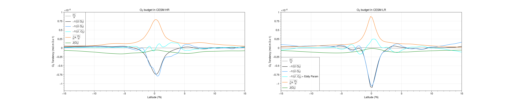

Oxygen Budget Analysis
Contents
Oxygen Budget Analysis#
This notebook analyzes the O\(_2\) budget from POP output. Dissolved oxygen in the ocean’s interior is simulated following:
\[
\frac{\partial{O_2}}{\partial{t}}= \underbrace{- \frac{\partial{U.O_2}}{\partial{x}} -\frac{\partial{V.O_2}}{\partial{y}}}_\text{Lateral Advection}
- \overbrace{\frac{\partial{W.O_2}}{\partial{z}}}^\text{Vertical Advection}
+ \underbrace{A_h.\nabla^2{O_2}}_\text{Lateral Mixing}
+\overbrace{\frac{\partial{}}{\partial{z}}k.\frac{\partial{O_2}}{\partial{z}}}^\text{Vertical Mixing}
+ \underbrace{ J(O_2) }_\text{Sources - Sinks}
\]
%load_ext autoreload
%autoreload 2
%matplotlib inline
import warnings
warnings.simplefilter("ignore") # Silence warnings
import xarray as xr
import numpy as np
from tqdm import tqdm
import xgcm
import pop_tools
import matplotlib.pyplot as plt
import matplotlib.colors as colors
import cmocean
import cartopy
import cartopy.crs as ccrs
import proplot
import matplotlib.patches as patches
from utils import *
C=CLSTR(1,20,200,10)
C
Client
Client-8fefaf8e-8e94-11ec-9bef-3cecef1acb68
| Connection method: Cluster object | Cluster type: dask_jobqueue.PBSCluster |
| Dashboard: https://jupyterhub.hpc.ucar.edu/stable/user/yeddebba/proxy/40347/status |
Cluster Info
PBSCluster
fd7bccb9
| Dashboard: https://jupyterhub.hpc.ucar.edu/stable/user/yeddebba/proxy/40347/status | Workers: 0 |
| Total threads: 0 | Total memory: 0 B |
Scheduler Info
Scheduler
Scheduler-1cc15cb8-8689-4f99-9941-5f4d6328e70f
| Comm: tcp://10.12.206.46:33495 | Workers: 0 |
| Dashboard: https://jupyterhub.hpc.ucar.edu/stable/user/yeddebba/proxy/40347/status | Total threads: 0 |
| Started: Just now | Total memory: 0 B |
Workers
dsh=xr.open_mfdataset({'/glade/scratch/yeddebba/Mesoscale/HR/TPAC/final_budget/O2_Budget_Mean.nc',
'/glade/scratch/yeddebba/Mesoscale/HR/TPAC/final_budget/O2_Budget_Eddy_Mean.nc',})
duh=xr.open_mfdataset('/glade/scratch/yeddebba/Mesoscale/HR/CLM/[UVW]VEL.CLM.nc')
dsh
<xarray.Dataset>
Dimensions: (z_t: 41, nlat: 631, nlon: 1701, z_w: 41, z_w_top: 41)
Coordinates:
* z_t (z_t) float32 500.0 1.5e+03 2.5e+03 ... 9.847e+04 1.106e+05
TLAT (nlat, nlon) float64 dask.array<chunksize=(631, 1701), meta=np.ndarray>
TLONG (nlat, nlon) float64 dask.array<chunksize=(631, 1701), meta=np.ndarray>
ULONG (nlat, nlon) float64 dask.array<chunksize=(631, 1701), meta=np.ndarray>
ULAT (nlat, nlon) float64 dask.array<chunksize=(631, 1701), meta=np.ndarray>
* z_w (z_w) float32 0.0 1e+03 2e+03 ... 8.296e+04 9.28e+04 1.041e+05
* z_w_top (z_w_top) float32 0.0 1e+03 2e+03 ... 9.28e+04 1.041e+05
Dimensions without coordinates: nlat, nlon
Data variables: (12/33)
DIV (z_t, nlat, nlon) float64 dask.array<chunksize=(41, 631, 1701), meta=np.ndarray>
DIVm (z_t, nlat, nlon) float64 dask.array<chunksize=(41, 631, 1701), meta=np.ndarray>
HDIF (z_t, nlat, nlon) float64 dask.array<chunksize=(41, 631, 1701), meta=np.ndarray>
J_O2 (z_t, nlat, nlon) float64 dask.array<chunksize=(41, 631, 1701), meta=np.ndarray>
O2 (z_t, nlat, nlon) float32 dask.array<chunksize=(41, 631, 1701), meta=np.ndarray>
STF_O2 (nlat, nlon) float64 dask.array<chunksize=(631, 1701), meta=np.ndarray>
... ...
dzw (z_w) float32 dask.array<chunksize=(41,), meta=np.ndarray>
VOL (z_t, nlat, nlon) float64 dask.array<chunksize=(41, 631, 1701), meta=np.ndarray>
Up_O2p (z_t, nlat, nlon) float64 dask.array<chunksize=(41, 631, 1701), meta=np.ndarray>
Vp_O2p (z_t, nlat, nlon) float64 dask.array<chunksize=(41, 631, 1701), meta=np.ndarray>
Wp_O2p (z_t, nlat, nlon) float64 dask.array<chunksize=(41, 631, 1701), meta=np.ndarray>
DIVp (z_t, nlat, nlon) float64 dask.array<chunksize=(41, 631, 1701), meta=np.ndarray>xarray.Dataset
- z_t: 41
- nlat: 631
- nlon: 1701
- z_w: 41
- z_w_top: 41
- z_t(z_t)float32500.0 1.5e+03 ... 1.106e+05
- long_name :
- depth from surface to midpoint of layer
- units :
- centimeters
- positive :
- down
- valid_min :
- 500.0
- valid_max :
- 587499.06
array([ 500. , 1500. , 2500. , 3500. , 4500. , 5500. , 6500. , 7500. , 8500. , 9500. , 10500. , 11500. , 12500. , 13500. , 14500. , 15500. , 16509.84 , 17547.904, 18629.127, 19766.027, 20971.139, 22257.828, 23640.883, 25137.016, 26765.42 , 28548.365, 30511.922, 32686.799, 35109.348, 37822.76 , 40878.465, 44337.77 , 48273.67 , 52772.8 , 57937.29 , 63886.26 , 70756.33 , 78700.25 , 87882.52 , 98470.586, 110620.42 ], dtype=float32) - TLAT(nlat, nlon)float64dask.array<chunksize=(631, 1701), meta=np.ndarray>
- long_name :
- array of t-grid latitudes
- units :
- degrees_north
Array Chunk Bytes 8.19 MiB 8.19 MiB Shape (631, 1701) (631, 1701) Count 5 Tasks 1 Chunks Type float64 numpy.ndarray - TLONG(nlat, nlon)float64dask.array<chunksize=(631, 1701), meta=np.ndarray>
- long_name :
- array of t-grid longitudes
- units :
- degrees_east
Array Chunk Bytes 8.19 MiB 8.19 MiB Shape (631, 1701) (631, 1701) Count 5 Tasks 1 Chunks Type float64 numpy.ndarray - ULONG(nlat, nlon)float64dask.array<chunksize=(631, 1701), meta=np.ndarray>
- long_name :
- array of u-grid longitudes
- units :
- degrees_east
Array Chunk Bytes 8.19 MiB 8.19 MiB Shape (631, 1701) (631, 1701) Count 5 Tasks 1 Chunks Type float64 numpy.ndarray - ULAT(nlat, nlon)float64dask.array<chunksize=(631, 1701), meta=np.ndarray>
- long_name :
- array of u-grid latitudes
- units :
- degrees_north
Array Chunk Bytes 8.19 MiB 8.19 MiB Shape (631, 1701) (631, 1701) Count 5 Tasks 1 Chunks Type float64 numpy.ndarray - z_w(z_w)float320.0 1e+03 ... 9.28e+04 1.041e+05
- long_name :
- depth from surface to top of layer
- units :
- centimeters
- positive :
- down
- valid_min :
- 0.0
- valid_max :
- 574999.06
array([ 0. , 1000. , 2000. , 3000. , 4000. , 5000. , 6000. , 7000. , 8000. , 9000. , 10000. , 11000. , 12000. , 13000. , 14000. , 15000. , 16000. , 17019.682, 18076.129, 19182.125, 20349.932, 21592.344, 22923.312, 24358.453, 25915.58 , 27615.26 , 29481.47 , 31542.373, 33831.227, 36387.473, 39258.047, 42498.887, 46176.656, 50370.688, 55174.91 , 60699.668, 67072.86 , 74439.805, 82960.695, 92804.35 , 104136.82 ], dtype=float32) - z_w_top(z_w_top)float320.0 1e+03 ... 9.28e+04 1.041e+05
- long_name :
- depth from surface to top of layer
- units :
- centimeters
- positive :
- down
- valid_min :
- 0.0
- valid_max :
- 574999.06
array([ 0. , 1000. , 2000. , 3000. , 4000. , 5000. , 6000. , 7000. , 8000. , 9000. , 10000. , 11000. , 12000. , 13000. , 14000. , 15000. , 16000. , 17019.682, 18076.129, 19182.125, 20349.932, 21592.344, 22923.312, 24358.453, 25915.58 , 27615.26 , 29481.47 , 31542.373, 33831.227, 36387.473, 39258.047, 42498.887, 46176.656, 50370.688, 55174.91 , 60699.668, 67072.86 , 74439.805, 82960.695, 92804.35 , 104136.82 ], dtype=float32)
- DIV(z_t, nlat, nlon)float64dask.array<chunksize=(41, 631, 1701), meta=np.ndarray>
Array Chunk Bytes 335.74 MiB 335.74 MiB Shape (41, 631, 1701) (41, 631, 1701) Count 2 Tasks 1 Chunks Type float64 numpy.ndarray - DIVm(z_t, nlat, nlon)float64dask.array<chunksize=(41, 631, 1701), meta=np.ndarray>
Array Chunk Bytes 335.74 MiB 335.74 MiB Shape (41, 631, 1701) (41, 631, 1701) Count 2 Tasks 1 Chunks Type float64 numpy.ndarray - HDIF(z_t, nlat, nlon)float64dask.array<chunksize=(41, 631, 1701), meta=np.ndarray>
Array Chunk Bytes 335.74 MiB 335.74 MiB Shape (41, 631, 1701) (41, 631, 1701) Count 2 Tasks 1 Chunks Type float64 numpy.ndarray - J_O2(z_t, nlat, nlon)float64dask.array<chunksize=(41, 631, 1701), meta=np.ndarray>
Array Chunk Bytes 335.74 MiB 335.74 MiB Shape (41, 631, 1701) (41, 631, 1701) Count 2 Tasks 1 Chunks Type float64 numpy.ndarray - O2(z_t, nlat, nlon)float32dask.array<chunksize=(41, 631, 1701), meta=np.ndarray>
Array Chunk Bytes 167.87 MiB 167.87 MiB Shape (41, 631, 1701) (41, 631, 1701) Count 2 Tasks 1 Chunks Type float32 numpy.ndarray - STF_O2(nlat, nlon)float64dask.array<chunksize=(631, 1701), meta=np.ndarray>
Array Chunk Bytes 8.19 MiB 8.19 MiB Shape (631, 1701) (631, 1701) Count 2 Tasks 1 Chunks Type float64 numpy.ndarray - TEND_O2(z_t, nlat, nlon)float64dask.array<chunksize=(41, 631, 1701), meta=np.ndarray>
Array Chunk Bytes 335.74 MiB 335.74 MiB Shape (41, 631, 1701) (41, 631, 1701) Count 2 Tasks 1 Chunks Type float64 numpy.ndarray - UE_O2(z_t, nlat, nlon)float64dask.array<chunksize=(41, 631, 1701), meta=np.ndarray>
Array Chunk Bytes 335.74 MiB 335.74 MiB Shape (41, 631, 1701) (41, 631, 1701) Count 2 Tasks 1 Chunks Type float64 numpy.ndarray - UVEL(z_t, nlat, nlon)float32dask.array<chunksize=(41, 631, 1701), meta=np.ndarray>
Array Chunk Bytes 167.87 MiB 167.87 MiB Shape (41, 631, 1701) (41, 631, 1701) Count 2 Tasks 1 Chunks Type float32 numpy.ndarray - U_O2(z_t, nlat, nlon)float64dask.array<chunksize=(41, 631, 1701), meta=np.ndarray>
Array Chunk Bytes 335.74 MiB 335.74 MiB Shape (41, 631, 1701) (41, 631, 1701) Count 2 Tasks 1 Chunks Type float64 numpy.ndarray - VDIF(z_t, nlat, nlon)float64dask.array<chunksize=(41, 631, 1701), meta=np.ndarray>
Array Chunk Bytes 335.74 MiB 335.74 MiB Shape (41, 631, 1701) (41, 631, 1701) Count 2 Tasks 1 Chunks Type float64 numpy.ndarray - VN_O2(z_t, nlat, nlon)float64dask.array<chunksize=(41, 631, 1701), meta=np.ndarray>
Array Chunk Bytes 335.74 MiB 335.74 MiB Shape (41, 631, 1701) (41, 631, 1701) Count 2 Tasks 1 Chunks Type float64 numpy.ndarray - V_O2(z_t, nlat, nlon)float64dask.array<chunksize=(41, 631, 1701), meta=np.ndarray>
Array Chunk Bytes 335.74 MiB 335.74 MiB Shape (41, 631, 1701) (41, 631, 1701) Count 2 Tasks 1 Chunks Type float64 numpy.ndarray - WT_O2(z_t, nlat, nlon)float64dask.array<chunksize=(41, 631, 1701), meta=np.ndarray>
Array Chunk Bytes 335.74 MiB 335.74 MiB Shape (41, 631, 1701) (41, 631, 1701) Count 2 Tasks 1 Chunks Type float64 numpy.ndarray - W_O2(z_t, nlat, nlon)float64dask.array<chunksize=(41, 631, 1701), meta=np.ndarray>
Array Chunk Bytes 335.74 MiB 335.74 MiB Shape (41, 631, 1701) (41, 631, 1701) Count 2 Tasks 1 Chunks Type float64 numpy.ndarray - DZT(z_t, nlat, nlon)float64dask.array<chunksize=(41, 631, 1701), meta=np.ndarray>
Array Chunk Bytes 335.74 MiB 335.74 MiB Shape (41, 631, 1701) (41, 631, 1701) Count 2 Tasks 1 Chunks Type float64 numpy.ndarray - DZU(z_t, nlat, nlon)float64dask.array<chunksize=(41, 631, 1701), meta=np.ndarray>
Array Chunk Bytes 335.74 MiB 335.74 MiB Shape (41, 631, 1701) (41, 631, 1701) Count 2 Tasks 1 Chunks Type float64 numpy.ndarray - DXT(nlat, nlon)float64dask.array<chunksize=(631, 1701), meta=np.ndarray>
Array Chunk Bytes 8.19 MiB 8.19 MiB Shape (631, 1701) (631, 1701) Count 2 Tasks 1 Chunks Type float64 numpy.ndarray - DXU(nlat, nlon)float64dask.array<chunksize=(631, 1701), meta=np.ndarray>
Array Chunk Bytes 8.19 MiB 8.19 MiB Shape (631, 1701) (631, 1701) Count 2 Tasks 1 Chunks Type float64 numpy.ndarray - DYT(nlat, nlon)float64dask.array<chunksize=(631, 1701), meta=np.ndarray>
Array Chunk Bytes 8.19 MiB 8.19 MiB Shape (631, 1701) (631, 1701) Count 2 Tasks 1 Chunks Type float64 numpy.ndarray - DYU(nlat, nlon)float64dask.array<chunksize=(631, 1701), meta=np.ndarray>
Array Chunk Bytes 8.19 MiB 8.19 MiB Shape (631, 1701) (631, 1701) Count 2 Tasks 1 Chunks Type float64 numpy.ndarray - KMT(nlat, nlon)float64dask.array<chunksize=(631, 1701), meta=np.ndarray>
Array Chunk Bytes 8.19 MiB 8.19 MiB Shape (631, 1701) (631, 1701) Count 2 Tasks 1 Chunks Type float64 numpy.ndarray - KMU(nlat, nlon)float64dask.array<chunksize=(631, 1701), meta=np.ndarray>
Array Chunk Bytes 8.19 MiB 8.19 MiB Shape (631, 1701) (631, 1701) Count 2 Tasks 1 Chunks Type float64 numpy.ndarray - REGION_MASK(nlat, nlon)float64dask.array<chunksize=(631, 1701), meta=np.ndarray>
Array Chunk Bytes 8.19 MiB 8.19 MiB Shape (631, 1701) (631, 1701) Count 2 Tasks 1 Chunks Type float64 numpy.ndarray - TAREA(nlat, nlon)float64dask.array<chunksize=(631, 1701), meta=np.ndarray>
Array Chunk Bytes 8.19 MiB 8.19 MiB Shape (631, 1701) (631, 1701) Count 2 Tasks 1 Chunks Type float64 numpy.ndarray - UAREA(nlat, nlon)float64dask.array<chunksize=(631, 1701), meta=np.ndarray>
Array Chunk Bytes 8.19 MiB 8.19 MiB Shape (631, 1701) (631, 1701) Count 2 Tasks 1 Chunks Type float64 numpy.ndarray - dz(z_t)float32dask.array<chunksize=(41,), meta=np.ndarray>
Array Chunk Bytes 164 B 164 B Shape (41,) (41,) Count 2 Tasks 1 Chunks Type float32 numpy.ndarray - dzw(z_w)float32dask.array<chunksize=(41,), meta=np.ndarray>
Array Chunk Bytes 164 B 164 B Shape (41,) (41,) Count 2 Tasks 1 Chunks Type float32 numpy.ndarray - VOL(z_t, nlat, nlon)float64dask.array<chunksize=(41, 631, 1701), meta=np.ndarray>
Array Chunk Bytes 335.74 MiB 335.74 MiB Shape (41, 631, 1701) (41, 631, 1701) Count 2 Tasks 1 Chunks Type float64 numpy.ndarray - Up_O2p(z_t, nlat, nlon)float64dask.array<chunksize=(41, 631, 1701), meta=np.ndarray>
Array Chunk Bytes 335.74 MiB 335.74 MiB Shape (41, 631, 1701) (41, 631, 1701) Count 2 Tasks 1 Chunks Type float64 numpy.ndarray - Vp_O2p(z_t, nlat, nlon)float64dask.array<chunksize=(41, 631, 1701), meta=np.ndarray>
Array Chunk Bytes 335.74 MiB 335.74 MiB Shape (41, 631, 1701) (41, 631, 1701) Count 2 Tasks 1 Chunks Type float64 numpy.ndarray - Wp_O2p(z_t, nlat, nlon)float64dask.array<chunksize=(41, 631, 1701), meta=np.ndarray>
Array Chunk Bytes 335.74 MiB 335.74 MiB Shape (41, 631, 1701) (41, 631, 1701) Count 2 Tasks 1 Chunks Type float64 numpy.ndarray - DIVp(z_t, nlat, nlon)float64dask.array<chunksize=(41, 631, 1701), meta=np.ndarray>
Array Chunk Bytes 335.74 MiB 335.74 MiB Shape (41, 631, 1701) (41, 631, 1701) Count 2 Tasks 1 Chunks Type float64 numpy.ndarray
ekeh=xr.open_mfdataset('/glade/scratch/yeddebba/Mesoscale/HR/CLM/EKE.15m.CLM.nc')
dge = xr.open_dataset('/glade/scratch/yeddebba/Mesoscale/HR/TPAC/POP_GRID_F.nc')
dge=dge.isel(z_w=np.arange(0,41),z_t=np.arange(0,41),z_w_top=np.arange(0,41)).isel(nlon=np.arange(400,1699),nlat=np.arange(100,550))
dsl=xr.open_mfdataset({'/glade/scratch/yeddebba/Mesoscale/LR/final_budget/O2_Budget_Mean.nc',#})
'/glade/scratch/yeddebba/Mesoscale/LR/CLM/O2_Mean.nc'})
dul=xr.open_mfdataset('/glade/scratch/yeddebba/Mesoscale/LR/CLM/[UVW]VEL.CLM.nc')
dsl
<xarray.Dataset>
Dimensions: (z_t: 60, nlat: 384, nlon: 320, z_w: 60, lat_aux_grid: 395, moc_comp: 3, moc_z: 61, transport_comp: 5, transport_reg: 2, z_t_150m: 15, z_w_bot: 60, z_w_top: 60)
Coordinates:
* z_t (z_t) float32 500.0 1.5e+03 ... 5.125e+05 5.375e+05
TLAT (nlat, nlon) float64 dask.array<chunksize=(384, 320), meta=np.ndarray>
TLONG (nlat, nlon) float64 dask.array<chunksize=(384, 320), meta=np.ndarray>
ULONG (nlat, nlon) float64 dask.array<chunksize=(384, 320), meta=np.ndarray>
ULAT (nlat, nlon) float64 dask.array<chunksize=(384, 320), meta=np.ndarray>
* lat_aux_grid (lat_aux_grid) float32 -79.49 -78.95 ... 89.47 90.0
* moc_z (moc_z) float32 0.0 1e+03 2e+03 ... 5.25e+05 5.5e+05
* z_t_150m (z_t_150m) float32 500.0 1.5e+03 ... 1.35e+04 1.45e+04
* z_w (z_w) float32 0.0 1e+03 2e+03 ... 5e+05 5.25e+05
* z_w_bot (z_w_bot) float32 1e+03 2e+03 ... 5.25e+05 5.5e+05
* z_w_top (z_w_top) float32 0.0 1e+03 2e+03 ... 5e+05 5.25e+05
Dimensions without coordinates: nlat, nlon, moc_comp, transport_comp, transport_reg
Data variables: (12/74)
DIA_IMPVF_O2 (z_t, nlat, nlon) float64 dask.array<chunksize=(60, 384, 320), meta=np.ndarray>
DIV (z_t, nlat, nlon) float64 dask.array<chunksize=(60, 384, 320), meta=np.ndarray>
DIVm (z_t, nlat, nlon) float64 dask.array<chunksize=(60, 384, 320), meta=np.ndarray>
HDIF (z_t, nlat, nlon) float64 dask.array<chunksize=(60, 384, 320), meta=np.ndarray>
HDIFB_O2 (z_t, nlat, nlon) float64 dask.array<chunksize=(60, 384, 320), meta=np.ndarray>
J_O2 (z_t, nlat, nlon) float64 dask.array<chunksize=(60, 384, 320), meta=np.ndarray>
... ...
stefan_boltzmann float64 ...
transport_components (transport_comp) |S256 dask.array<chunksize=(5,), meta=np.ndarray>
transport_regions (transport_reg) |S256 dask.array<chunksize=(2,), meta=np.ndarray>
vonkar float64 ...
VOL (z_t, nlat, nlon) float64 dask.array<chunksize=(60, 384, 320), meta=np.ndarray>
O2 (z_t, nlat, nlon) float32 dask.array<chunksize=(60, 384, 320), meta=np.ndarray>xarray.Dataset
- z_t: 60
- nlat: 384
- nlon: 320
- z_w: 60
- lat_aux_grid: 395
- moc_comp: 3
- moc_z: 61
- transport_comp: 5
- transport_reg: 2
- z_t_150m: 15
- z_w_bot: 60
- z_w_top: 60
- z_t(z_t)float32500.0 1.5e+03 ... 5.375e+05
- units :
- centimeters
- long_name :
- depth from surface to midpoint of layer
- valid_min :
- 500.0
- valid_max :
- 537500.0
- positive :
- down
array([5.000000e+02, 1.500000e+03, 2.500000e+03, 3.500000e+03, 4.500000e+03, 5.500000e+03, 6.500000e+03, 7.500000e+03, 8.500000e+03, 9.500000e+03, 1.050000e+04, 1.150000e+04, 1.250000e+04, 1.350000e+04, 1.450000e+04, 1.550000e+04, 1.650984e+04, 1.754790e+04, 1.862913e+04, 1.976603e+04, 2.097114e+04, 2.225783e+04, 2.364088e+04, 2.513702e+04, 2.676542e+04, 2.854837e+04, 3.051192e+04, 3.268680e+04, 3.510935e+04, 3.782276e+04, 4.087846e+04, 4.433777e+04, 4.827367e+04, 5.277280e+04, 5.793729e+04, 6.388626e+04, 7.075633e+04, 7.870025e+04, 8.788252e+04, 9.847059e+04, 1.106204e+05, 1.244567e+05, 1.400497e+05, 1.573946e+05, 1.764003e+05, 1.968944e+05, 2.186457e+05, 2.413972e+05, 2.649001e+05, 2.889385e+05, 3.133405e+05, 3.379793e+05, 3.627670e+05, 3.876452e+05, 4.125768e+05, 4.375392e+05, 4.625190e+05, 4.875083e+05, 5.125028e+05, 5.375000e+05], dtype=float32) - TLAT(nlat, nlon)float64dask.array<chunksize=(384, 320), meta=np.ndarray>
- long_name :
- array of t-grid latitudes
- units :
- degrees_north
Array Chunk Bytes 0.94 MiB 0.94 MiB Shape (384, 320) (384, 320) Count 5 Tasks 1 Chunks Type float64 numpy.ndarray - TLONG(nlat, nlon)float64dask.array<chunksize=(384, 320), meta=np.ndarray>
- long_name :
- array of t-grid longitudes
- units :
- degrees_east
Array Chunk Bytes 0.94 MiB 0.94 MiB Shape (384, 320) (384, 320) Count 5 Tasks 1 Chunks Type float64 numpy.ndarray - ULONG(nlat, nlon)float64dask.array<chunksize=(384, 320), meta=np.ndarray>
- long_name :
- array of u-grid longitudes
- units :
- degrees_east
Array Chunk Bytes 0.94 MiB 0.94 MiB Shape (384, 320) (384, 320) Count 2 Tasks 1 Chunks Type float64 numpy.ndarray - ULAT(nlat, nlon)float64dask.array<chunksize=(384, 320), meta=np.ndarray>
- long_name :
- array of u-grid latitudes
- units :
- degrees_north
Array Chunk Bytes 0.94 MiB 0.94 MiB Shape (384, 320) (384, 320) Count 2 Tasks 1 Chunks Type float64 numpy.ndarray - lat_aux_grid(lat_aux_grid)float32-79.49 -78.95 -78.42 ... 89.47 90.0
- units :
- degrees_north
- long_name :
- latitude grid for transport diagnostics
- valid_min :
- -79.48815
- valid_max :
- 90.0
array([-79.48815 , -78.952896, -78.418655, ..., 88.948814, 89.47441 , 90. ], dtype=float32) - moc_z(moc_z)float320.0 1e+03 ... 5.25e+05 5.5e+05
- units :
- centimeters
- long_name :
- depth from surface to top of layer
- valid_min :
- 0.0
- valid_max :
- 549999.06
- positive :
- down
array([ 0. , 1000. , 2000. , 3000. , 4000. , 5000. , 6000. , 7000. , 8000. , 9000. , 10000. , 11000. , 12000. , 13000. , 14000. , 15000. , 16000. , 17019.682, 18076.129, 19182.125, 20349.932, 21592.344, 22923.312, 24358.453, 25915.58 , 27615.26 , 29481.47 , 31542.373, 33831.227, 36387.473, 39258.047, 42498.887, 46176.656, 50370.688, 55174.91 , 60699.668, 67072.86 , 74439.805, 82960.695, 92804.35 , 104136.82 , 117104.016, 131809.36 , 148290.08 , 166499.2 , 186301.44 , 207487.39 , 229803.9 , 252990.4 , 276809.84 , 301067.06 , 325613.84 , 350344.88 , 375189.2 , 400101.16 , 425052.47 , 450026.06 , 475012. , 500004.7 , 525000.94 , 549999.06 ], dtype=float32) - z_t_150m(z_t_150m)float32500.0 1.5e+03 ... 1.35e+04 1.45e+04
- units :
- centimeters
- long_name :
- depth from surface to midpoint of layer
- valid_min :
- 500.0
- valid_max :
- 14500.0
- positive :
- down
array([ 500., 1500., 2500., 3500., 4500., 5500., 6500., 7500., 8500., 9500., 10500., 11500., 12500., 13500., 14500.], dtype=float32) - z_w(z_w)float320.0 1e+03 2e+03 ... 5e+05 5.25e+05
- units :
- centimeters
- long_name :
- depth from surface to top of layer
- valid_min :
- 0.0
- valid_max :
- 525000.94
- positive :
- down
array([ 0. , 1000. , 2000. , 3000. , 4000. , 5000. , 6000. , 7000. , 8000. , 9000. , 10000. , 11000. , 12000. , 13000. , 14000. , 15000. , 16000. , 17019.682, 18076.129, 19182.125, 20349.932, 21592.344, 22923.312, 24358.453, 25915.58 , 27615.26 , 29481.47 , 31542.373, 33831.227, 36387.473, 39258.047, 42498.887, 46176.656, 50370.688, 55174.91 , 60699.668, 67072.86 , 74439.805, 82960.695, 92804.35 , 104136.82 , 117104.016, 131809.36 , 148290.08 , 166499.2 , 186301.44 , 207487.39 , 229803.9 , 252990.4 , 276809.84 , 301067.06 , 325613.84 , 350344.88 , 375189.2 , 400101.16 , 425052.47 , 450026.06 , 475012. , 500004.7 , 525000.94 ], dtype=float32) - z_w_bot(z_w_bot)float321e+03 2e+03 ... 5.25e+05 5.5e+05
- units :
- centimeters
- long_name :
- depth from surface to bottom of layer
- valid_min :
- 1000.0
- valid_max :
- 549999.06
- positive :
- down
array([ 1000. , 2000. , 3000. , 4000. , 5000. , 6000. , 7000. , 8000. , 9000. , 10000. , 11000. , 12000. , 13000. , 14000. , 15000. , 16000. , 17019.682, 18076.129, 19182.125, 20349.932, 21592.344, 22923.312, 24358.453, 25915.58 , 27615.26 , 29481.47 , 31542.373, 33831.227, 36387.473, 39258.047, 42498.887, 46176.656, 50370.688, 55174.91 , 60699.668, 67072.86 , 74439.805, 82960.695, 92804.35 , 104136.82 , 117104.016, 131809.36 , 148290.08 , 166499.2 , 186301.44 , 207487.39 , 229803.9 , 252990.4 , 276809.84 , 301067.06 , 325613.84 , 350344.88 , 375189.2 , 400101.16 , 425052.47 , 450026.06 , 475012. , 500004.7 , 525000.94 , 549999.06 ], dtype=float32) - z_w_top(z_w_top)float320.0 1e+03 2e+03 ... 5e+05 5.25e+05
- units :
- centimeters
- long_name :
- depth from surface to top of layer
- valid_min :
- 0.0
- valid_max :
- 525000.94
- positive :
- down
array([ 0. , 1000. , 2000. , 3000. , 4000. , 5000. , 6000. , 7000. , 8000. , 9000. , 10000. , 11000. , 12000. , 13000. , 14000. , 15000. , 16000. , 17019.682, 18076.129, 19182.125, 20349.932, 21592.344, 22923.312, 24358.453, 25915.58 , 27615.26 , 29481.47 , 31542.373, 33831.227, 36387.473, 39258.047, 42498.887, 46176.656, 50370.688, 55174.91 , 60699.668, 67072.86 , 74439.805, 82960.695, 92804.35 , 104136.82 , 117104.016, 131809.36 , 148290.08 , 166499.2 , 186301.44 , 207487.39 , 229803.9 , 252990.4 , 276809.84 , 301067.06 , 325613.84 , 350344.88 , 375189.2 , 400101.16 , 425052.47 , 450026.06 , 475012. , 500004.7 , 525000.94 ], dtype=float32)
- DIA_IMPVF_O2(z_t, nlat, nlon)float64dask.array<chunksize=(60, 384, 320), meta=np.ndarray>
Array Chunk Bytes 56.25 MiB 56.25 MiB Shape (60, 384, 320) (60, 384, 320) Count 2 Tasks 1 Chunks Type float64 numpy.ndarray - DIV(z_t, nlat, nlon)float64dask.array<chunksize=(60, 384, 320), meta=np.ndarray>
Array Chunk Bytes 56.25 MiB 56.25 MiB Shape (60, 384, 320) (60, 384, 320) Count 2 Tasks 1 Chunks Type float64 numpy.ndarray - DIVm(z_t, nlat, nlon)float64dask.array<chunksize=(60, 384, 320), meta=np.ndarray>
Array Chunk Bytes 56.25 MiB 56.25 MiB Shape (60, 384, 320) (60, 384, 320) Count 2 Tasks 1 Chunks Type float64 numpy.ndarray - HDIF(z_t, nlat, nlon)float64dask.array<chunksize=(60, 384, 320), meta=np.ndarray>
Array Chunk Bytes 56.25 MiB 56.25 MiB Shape (60, 384, 320) (60, 384, 320) Count 2 Tasks 1 Chunks Type float64 numpy.ndarray - HDIFB_O2(z_t, nlat, nlon)float64dask.array<chunksize=(60, 384, 320), meta=np.ndarray>
Array Chunk Bytes 56.25 MiB 56.25 MiB Shape (60, 384, 320) (60, 384, 320) Count 2 Tasks 1 Chunks Type float64 numpy.ndarray - J_O2(z_t, nlat, nlon)float64dask.array<chunksize=(60, 384, 320), meta=np.ndarray>
Array Chunk Bytes 56.25 MiB 56.25 MiB Shape (60, 384, 320) (60, 384, 320) Count 2 Tasks 1 Chunks Type float64 numpy.ndarray - KPP_SRC_O2(z_t, nlat, nlon)float64dask.array<chunksize=(60, 384, 320), meta=np.ndarray>
Array Chunk Bytes 56.25 MiB 56.25 MiB Shape (60, 384, 320) (60, 384, 320) Count 2 Tasks 1 Chunks Type float64 numpy.ndarray - STF_O2(nlat, nlon)float64dask.array<chunksize=(384, 320), meta=np.ndarray>
Array Chunk Bytes 0.94 MiB 0.94 MiB Shape (384, 320) (384, 320) Count 2 Tasks 1 Chunks Type float64 numpy.ndarray - TEND_O2(z_t, nlat, nlon)float64dask.array<chunksize=(60, 384, 320), meta=np.ndarray>
Array Chunk Bytes 56.25 MiB 56.25 MiB Shape (60, 384, 320) (60, 384, 320) Count 2 Tasks 1 Chunks Type float64 numpy.ndarray - UE_O2(z_t, nlat, nlon)float64dask.array<chunksize=(60, 384, 320), meta=np.ndarray>
Array Chunk Bytes 56.25 MiB 56.25 MiB Shape (60, 384, 320) (60, 384, 320) Count 2 Tasks 1 Chunks Type float64 numpy.ndarray - U_O2(z_t, nlat, nlon)float64dask.array<chunksize=(60, 384, 320), meta=np.ndarray>
Array Chunk Bytes 56.25 MiB 56.25 MiB Shape (60, 384, 320) (60, 384, 320) Count 2 Tasks 1 Chunks Type float64 numpy.ndarray - VDIF(z_t, nlat, nlon)float64dask.array<chunksize=(60, 384, 320), meta=np.ndarray>
Array Chunk Bytes 56.25 MiB 56.25 MiB Shape (60, 384, 320) (60, 384, 320) Count 2 Tasks 1 Chunks Type float64 numpy.ndarray - VN_O2(z_t, nlat, nlon)float64dask.array<chunksize=(60, 384, 320), meta=np.ndarray>
Array Chunk Bytes 56.25 MiB 56.25 MiB Shape (60, 384, 320) (60, 384, 320) Count 2 Tasks 1 Chunks Type float64 numpy.ndarray - V_O2(z_t, nlat, nlon)float64dask.array<chunksize=(60, 384, 320), meta=np.ndarray>
Array Chunk Bytes 56.25 MiB 56.25 MiB Shape (60, 384, 320) (60, 384, 320) Count 2 Tasks 1 Chunks Type float64 numpy.ndarray - WT_O2(z_t, nlat, nlon)float64dask.array<chunksize=(60, 384, 320), meta=np.ndarray>
Array Chunk Bytes 56.25 MiB 56.25 MiB Shape (60, 384, 320) (60, 384, 320) Count 2 Tasks 1 Chunks Type float64 numpy.ndarray - W_O2(z_t, nlat, nlon)float64dask.array<chunksize=(60, 384, 320), meta=np.ndarray>
Array Chunk Bytes 56.25 MiB 56.25 MiB Shape (60, 384, 320) (60, 384, 320) Count 2 Tasks 1 Chunks Type float64 numpy.ndarray - Up_O2p(z_t, nlat, nlon)float64dask.array<chunksize=(60, 384, 320), meta=np.ndarray>
Array Chunk Bytes 56.25 MiB 56.25 MiB Shape (60, 384, 320) (60, 384, 320) Count 2 Tasks 1 Chunks Type float64 numpy.ndarray - Vp_O2p(z_t, nlat, nlon)float64dask.array<chunksize=(60, 384, 320), meta=np.ndarray>
Array Chunk Bytes 56.25 MiB 56.25 MiB Shape (60, 384, 320) (60, 384, 320) Count 2 Tasks 1 Chunks Type float64 numpy.ndarray - Wp_O2p(z_t, nlat, nlon)float64dask.array<chunksize=(60, 384, 320), meta=np.ndarray>
Array Chunk Bytes 56.25 MiB 56.25 MiB Shape (60, 384, 320) (60, 384, 320) Count 2 Tasks 1 Chunks Type float64 numpy.ndarray - DIVp(z_t, nlat, nlon)float64dask.array<chunksize=(60, 384, 320), meta=np.ndarray>
Array Chunk Bytes 56.25 MiB 56.25 MiB Shape (60, 384, 320) (60, 384, 320) Count 2 Tasks 1 Chunks Type float64 numpy.ndarray - ANGLE(nlat, nlon)float64dask.array<chunksize=(384, 320), meta=np.ndarray>
Array Chunk Bytes 0.94 MiB 0.94 MiB Shape (384, 320) (384, 320) Count 2 Tasks 1 Chunks Type float64 numpy.ndarray - ANGLET(nlat, nlon)float64dask.array<chunksize=(384, 320), meta=np.ndarray>
Array Chunk Bytes 0.94 MiB 0.94 MiB Shape (384, 320) (384, 320) Count 2 Tasks 1 Chunks Type float64 numpy.ndarray - DXT(nlat, nlon)float64dask.array<chunksize=(384, 320), meta=np.ndarray>
Array Chunk Bytes 0.94 MiB 0.94 MiB Shape (384, 320) (384, 320) Count 2 Tasks 1 Chunks Type float64 numpy.ndarray - DXU(nlat, nlon)float64dask.array<chunksize=(384, 320), meta=np.ndarray>
Array Chunk Bytes 0.94 MiB 0.94 MiB Shape (384, 320) (384, 320) Count 2 Tasks 1 Chunks Type float64 numpy.ndarray - DYT(nlat, nlon)float64dask.array<chunksize=(384, 320), meta=np.ndarray>
Array Chunk Bytes 0.94 MiB 0.94 MiB Shape (384, 320) (384, 320) Count 2 Tasks 1 Chunks Type float64 numpy.ndarray - DYU(nlat, nlon)float64dask.array<chunksize=(384, 320), meta=np.ndarray>
Array Chunk Bytes 0.94 MiB 0.94 MiB Shape (384, 320) (384, 320) Count 2 Tasks 1 Chunks Type float64 numpy.ndarray - HT(nlat, nlon)float64dask.array<chunksize=(384, 320), meta=np.ndarray>
Array Chunk Bytes 0.94 MiB 0.94 MiB Shape (384, 320) (384, 320) Count 2 Tasks 1 Chunks Type float64 numpy.ndarray - HTE(nlat, nlon)float64dask.array<chunksize=(384, 320), meta=np.ndarray>
Array Chunk Bytes 0.94 MiB 0.94 MiB Shape (384, 320) (384, 320) Count 2 Tasks 1 Chunks Type float64 numpy.ndarray - HTN(nlat, nlon)float64dask.array<chunksize=(384, 320), meta=np.ndarray>
Array Chunk Bytes 0.94 MiB 0.94 MiB Shape (384, 320) (384, 320) Count 2 Tasks 1 Chunks Type float64 numpy.ndarray - HU(nlat, nlon)float64dask.array<chunksize=(384, 320), meta=np.ndarray>
Array Chunk Bytes 0.94 MiB 0.94 MiB Shape (384, 320) (384, 320) Count 2 Tasks 1 Chunks Type float64 numpy.ndarray - HUS(nlat, nlon)float64dask.array<chunksize=(384, 320), meta=np.ndarray>
Array Chunk Bytes 0.94 MiB 0.94 MiB Shape (384, 320) (384, 320) Count 2 Tasks 1 Chunks Type float64 numpy.ndarray - HUW(nlat, nlon)float64dask.array<chunksize=(384, 320), meta=np.ndarray>
Array Chunk Bytes 0.94 MiB 0.94 MiB Shape (384, 320) (384, 320) Count 2 Tasks 1 Chunks Type float64 numpy.ndarray - KMT(nlat, nlon)float64dask.array<chunksize=(384, 320), meta=np.ndarray>
Array Chunk Bytes 0.94 MiB 0.94 MiB Shape (384, 320) (384, 320) Count 2 Tasks 1 Chunks Type float64 numpy.ndarray - KMU(nlat, nlon)float64dask.array<chunksize=(384, 320), meta=np.ndarray>
Array Chunk Bytes 0.94 MiB 0.94 MiB Shape (384, 320) (384, 320) Count 2 Tasks 1 Chunks Type float64 numpy.ndarray - REGION_MASK(nlat, nlon)float64dask.array<chunksize=(384, 320), meta=np.ndarray>
Array Chunk Bytes 0.94 MiB 0.94 MiB Shape (384, 320) (384, 320) Count 2 Tasks 1 Chunks Type float64 numpy.ndarray - T0_Kelvin()float64...
array(273.15)
- TAREA(nlat, nlon)float64dask.array<chunksize=(384, 320), meta=np.ndarray>
Array Chunk Bytes 0.94 MiB 0.94 MiB Shape (384, 320) (384, 320) Count 2 Tasks 1 Chunks Type float64 numpy.ndarray - UAREA(nlat, nlon)float64dask.array<chunksize=(384, 320), meta=np.ndarray>
Array Chunk Bytes 0.94 MiB 0.94 MiB Shape (384, 320) (384, 320) Count 2 Tasks 1 Chunks Type float64 numpy.ndarray - cp_air()float64...
array(1004.64)
- cp_sw()float64...
array(39960000.)
- days_in_norm_year()timedelta64[ns]...
array(31536000000000000, dtype='timedelta64[ns]')
- dz(z_t)float32dask.array<chunksize=(60,), meta=np.ndarray>
Array Chunk Bytes 240 B 240 B Shape (60,) (60,) Count 2 Tasks 1 Chunks Type float32 numpy.ndarray - dzw(z_w)float32dask.array<chunksize=(60,), meta=np.ndarray>
Array Chunk Bytes 240 B 240 B Shape (60,) (60,) Count 2 Tasks 1 Chunks Type float32 numpy.ndarray - fwflux_factor()float64...
array(0.0001)
- grav()float64...
array(980.616)
- heat_to_PW()float64...
array(4.186e-15)
- hflux_factor()float64...
array(2.439086e-05)
- latent_heat_fusion()float64...
array(3.337e+09)
- latent_heat_vapor()float64...
array(2501000.)
- mass_to_Sv()float64...
array(1.e-12)
- moc_components(moc_comp)|S256dask.array<chunksize=(3,), meta=np.ndarray>
Array Chunk Bytes 768 B 768 B Shape (3,) (3,) Count 2 Tasks 1 Chunks Type |S256 numpy.ndarray - momentum_factor()float64...
array(10.)
- nsurface_t()float64...
array(86212.)
- nsurface_u()float64...
array(83047.)
- ocn_ref_salinity()float64...
array(34.7)
- omega()float64...
array(7.292124e-05)
- ppt_to_salt()float64...
array(0.001)
- radius()float64...
array(6.37122e+08)
- rho_air()float64...
array(1.292318)
- rho_fw()float64...
array(1.)
- rho_sw()float64...
array(1.026)
- salinity_factor()float64...
array(-0.00347)
- salt_to_Svppt()float64...
array(1.e-09)
- salt_to_mmday()float64...
array(315360.)
- salt_to_ppt()float64...
array(1000.)
- sea_ice_salinity()float64...
array(4.)
- sflux_factor()float64...
array(0.1)
- sound()float64...
array(150000.)
- stefan_boltzmann()float64...
array(5.67e-08)
- transport_components(transport_comp)|S256dask.array<chunksize=(5,), meta=np.ndarray>
Array Chunk Bytes 1.25 kiB 1.25 kiB Shape (5,) (5,) Count 2 Tasks 1 Chunks Type |S256 numpy.ndarray - transport_regions(transport_reg)|S256dask.array<chunksize=(2,), meta=np.ndarray>
Array Chunk Bytes 512 B 512 B Shape (2,) (2,) Count 2 Tasks 1 Chunks Type |S256 numpy.ndarray - vonkar()float64...
array(0.4)
- VOL(z_t, nlat, nlon)float64dask.array<chunksize=(60, 384, 320), meta=np.ndarray>
Array Chunk Bytes 56.25 MiB 56.25 MiB Shape (60, 384, 320) (60, 384, 320) Count 2 Tasks 1 Chunks Type float64 numpy.ndarray - O2(z_t, nlat, nlon)float32dask.array<chunksize=(60, 384, 320), meta=np.ndarray>
Array Chunk Bytes 28.12 MiB 28.12 MiB Shape (60, 384, 320) (60, 384, 320) Count 2 Tasks 1 Chunks Type float32 numpy.ndarray
ekel=xr.open_mfdataset('/glade/scratch/yeddebba/Mesoscale/LR/CLM/EKE_15m.nc')
Plot#
def plot_depth_section(ax,x,z, var,cntf,lev,clr,units,title,coords,fs,fsx,lw,alp,cb_on,profile):
if cntf==True:
cs= ax.contourf(x,z,var,levels=lev,cmap=clr,extend='both')
if cb_on==True:
cb = plt.colorbar(cs, ax=ax, orientation='vertical', extend='both',pad=0.02)#, aspect=20)
# cb.ax.set_title(units,fontsize=fs-1,pad=0.2)
cb.set_label(units, rotation=0,size=fs-2,position=(0,1.08))
cb.ax.tick_params(labelsize=fs-1)
cb.ax.minorticks_off()
if cntf==False: cs= ax.contour(x,z,var,colors=clr,linewidths=lw,levels=lev,alpha=alp)
ax.set_title(title,loc='center',fontsize=fs)
ax.set_ylim(coords[0]); ax.set_xlim(coords[1]); ax.minorticks_on();
ax.set_ylabel('Depth (m)',fontsize=fs-2);
ax.set_aspect('auto')
if profile=='lon': ax.set_xlabel('Latitude ($^{o}$N)',fontsize=fs-2)
if profile=='lat': ax.set_xlabel('Longitude ($^{o}$E)',fontsize=fs-2)
ax.set_title(title,pad=0.01,fontsize=fs, loc='center');
ax.tick_params(axis='both', labelsize=fs)
return ax
def plot_cmap(ax,lon,lat, var,vmn, vmx, stp, clr,units,title,coor,fs,fsx,lon_lab,lat_lab):
ax.set_extent(coor,crs=cartopy.crs.PlateCarree())
pc= ax.contourf(lon,lat,var,np.arange(vmn,vmx,stp),cmap=clr,transform=ccrs.PlateCarree(), extend='both') #,
land = ax.add_feature(cartopy.feature.NaturalEarthFeature('physical', 'land', '10m',linewidth=0.1, edgecolor='black', facecolor='grey'))
cb = plt.colorbar(pc, ax=ax, orientation='vertical', extend='both',pad=0.02)#, aspect=20)
cb.set_label(units, rotation=0,size=fs-3,position=(0.0,1.08))
# cb.ax.set_title(units,fontsize=fs-1,pad=0.2)
cb.ax.minorticks_off()
cb.ax.tick_params(labelsize=fs)
ax.set_aspect('auto')
ax.set_title(title,loc='center',fontsize=fs)
gl=ax.gridlines(draw_labels=True)
gl.xlabel_style = {'size': fsx, 'color': 'black'}; gl.ylabel_style = {'size': fsx, 'color': 'black'};
gl.xlabels_top = False; gl.ylabels_right= False; gl.xlines = False; gl.ylines = False
gl.xlocator = mticker.FixedLocator(lon_lab); gl.ylocator = mticker.FixedLocator(lat_lab)
gl.xformatter = LONGITUDE_FORMATTER ; gl.yformatter = LATITUDE_FORMATTER
return ax
Integrate over depth, meridional, zonal bands#
top=50; bot=150
Si=2 ; Ni=6
Ei=-100 ; Wi=-160
clr_o2='NegPos'
om_clr='blue'
omz_clr='green'
odz_clr='lime'
ekeh.__xarray_dataarray_variable__
<xarray.DataArray '__xarray_dataarray_variable__' (nlat: 300, nlon: 1299)>
dask.array<open_dataset-514d3f92ade6b20b07de4ee92e8a3684__xarray_dataarray_variable__, shape=(300, 1299), dtype=float64, chunksize=(300, 1299), chunktype=numpy.ndarray>
Coordinates:
ULAT (nlat, nlon) float64 dask.array<chunksize=(300, 1299), meta=np.ndarray>
ULONG (nlat, nlon) float64 dask.array<chunksize=(300, 1299), meta=np.ndarray>
z_t float32 ...
Dimensions without coordinates: nlat, nlonxarray.DataArray
'__xarray_dataarray_variable__'
- nlat: 300
- nlon: 1299
- dask.array<chunksize=(300, 1299), meta=np.ndarray>
Array Chunk Bytes 2.97 MiB 2.97 MiB Shape (300, 1299) (300, 1299) Count 2 Tasks 1 Chunks Type float64 numpy.ndarray - ULAT(nlat, nlon)float64dask.array<chunksize=(300, 1299), meta=np.ndarray>
- long_name :
- array of u-grid latitudes
- units :
- degrees_north
Array Chunk Bytes 2.97 MiB 2.97 MiB Shape (300, 1299) (300, 1299) Count 2 Tasks 1 Chunks Type float64 numpy.ndarray - ULONG(nlat, nlon)float64dask.array<chunksize=(300, 1299), meta=np.ndarray>
- long_name :
- array of u-grid longitudes
- units :
- degrees_east
Array Chunk Bytes 2.97 MiB 2.97 MiB Shape (300, 1299) (300, 1299) Count 2 Tasks 1 Chunks Type float64 numpy.ndarray - z_t()float32...
- long_name :
- depth from surface to midpoint of layer
- units :
- centimeters
- positive :
- down
- valid_min :
- 500.0
- valid_max :
- 587499.06
array(1500., dtype=float32)
N,W=find_indices(dsh.TLONG,dsh.TLAT,360+Wi,Ni)
S,E=find_indices(dsh.TLONG,dsh.TLAT,360+Ei,Si)
fig = plt.figure(figsize=(16,20),dpi=100)
fs=16; fsx=10
EE=-200.0; WW=-70.1; SS=-20.0; NN=20.1
coor=[EE,WW,SS,NN]; CL=215.0 # central longtiude
lon_lab=np.concatenate([np.arange(EE,WW,20)])
lat_lab=np.arange(SS,NN,5)
clr_o2='NegPos'
om_clr='blue'
omz_clr='green'
odz_clr='lime'
VAR= [dsh.TEND_O2.sel(z_t=slice(top*1e2,bot*1e2)).sum('z_t')*nmol_mol/(dsh.VOL.sel(z_t=slice(top*1e2,bot*1e2)).sum('z_t')*cm3_m3),
dsh.DIV.sel(z_t=slice(top*1e2,bot*1e2)).sum('z_t')*nmol_mol/(dsh.VOL.sel(z_t=slice(top*1e2,bot*1e2)).sum('z_t')*cm3_m3),
dsh.DIVm.sel(z_t=slice(top*1e2,bot*1e2)).sum('z_t')*nmol_mol/(dsh.VOL.sel(z_t=slice(top*1e2,bot*1e2)).sum('z_t')*cm3_m3),
dsh.DIVp.sel(z_t=slice(top*1e2,bot*1e2)).sum('z_t')*nmol_mol/(dsh.VOL.sel(z_t=slice(top*1e2,bot*1e2)).sum('z_t')*cm3_m3),
dsh.VDIF.sel(z_t=slice(top*1e2,bot*1e2)).sum('z_t')*nmol_mol/(dsh.VOL.sel(z_t=slice(top*1e2,bot*1e2)).sum('z_t')*cm3_m3),
dsh.J_O2.sel(z_t=slice(top*1e2,bot*1e2)).sum('z_t')*nmol_mol/(dsh.VOL.sel(z_t=slice(top*1e2,bot*1e2)).sum('z_t')*cm3_m3),]
units=[' mol.m$^{-3}$.s$^{-1}$']
title=[r'$\overline{\frac{\partial{O_2}}{\partial{t}}}$ ',
r'$-\nabla{\overline{(U.O_2)}}$ ',
r'$-\nabla{(\overline{U}.\overline{O_2})}$ ',
r"$-\nabla{(\overline{U'.O_2'})}$",
# r'$-\nabla_H{\overline{(U.O_2)}}$ ',
# r'$\overline{\frac{\partial{w.O_2}}{\partial{z}}}$ ',
r'$\overline{\frac{\partial{}}{\partial{z}}k.\frac{\partial{O_2}}{\partial{z}}}$ ',
r'$\overline{J(O_2)}$ ']
clrs=[clr_o2]
lmax=5e-9
lmin=-lmax
lstp=lmax*0.5e-1
gs = fig.add_gridspec(nrows=6, ncols=2, left=0.05, right=0.95, wspace=0.1, hspace=0.4)
rng=[0,1,2,3,4,5]
r=[0,1,2,3,4,5]
c=[0,0,0,0,0,0]
for i in tqdm(np.arange(0,6)):#len(VAR))):
ax = fig.add_subplot(gs[r[i], c[i]] ,projection=ccrs.PlateCarree())
ax = plot_cmap(ax,dsh.TLONG,dsh.TLAT, VAR[i],lmin, lmax, lstp,
clrs[0],units[0],title[i],coor,fs,fsx, lon_lab,lat_lab)
# (dv.UVEL).isel(z_t=15).plot.contour(colors='black',linewidths=0.7,levels=np.arange(-150,150,50))
ax.contour(dsh.TLONG,dsh.TLAT, dsh.O2.isel(z_t=15),colors=omz_clr,linewidths=0.9,levels=np.arange(60,60.1,5))
ax.contour(dsh.TLONG,dsh.TLAT, dsh.O2.isel(z_t=15),colors=odz_clr,linewidths=0.9,levels=np.arange(20,20.1,5))
if i==0:
ax.contour(dsh.TLONG,dsh.TLAT, dsh.O2.isel(z_t=15),colors='black',linewidths=0.3,levels=np.arange(0,200.1,10))
gl=ax.gridlines(draw_labels=True)
gl.xlabel_style = {'size': fsx, 'color': 'black'}; gl.ylabel_style = {'size': fsx, 'color': 'black'};
gl.xlabels_top = False; gl.ylabels_right= False; gl.xlines = False; gl.ylines = False
gl.xlocator = mticker.FixedLocator(lon_lab); gl.ylocator = mticker.FixedLocator(lat_lab)
gl.xformatter = LONGITUDE_FORMATTER ; gl.yformatter = LATITUDE_FORMATTER
N,W=find_indices(dsl.TLONG,dsl.TLAT,360+Wi,Ni)
S,E=find_indices(dsl.TLONG,dsl.TLAT,360+Ei,Si)
VAR= [dsl.TEND_O2.sel(z_t=slice(top*1e2,bot*1e2)).sum('z_t')*nmol_mol/(dsl.VOL.sel(z_t=slice(top*1e2,bot*1e2)).sum('z_t')*cm3_m3),
dsl.DIV.sel(z_t=slice(top*1e2,bot*1e2)).sum('z_t')*nmol_mol/(dsl.VOL.sel(z_t=slice(top*1e2,bot*1e2)).sum('z_t')*cm3_m3),
dsl.DIVm.sel(z_t=slice(top*1e2,bot*1e2)).sum('z_t')*nmol_mol/(dsl.VOL.sel(z_t=slice(top*1e2,bot*1e2)).sum('z_t')*cm3_m3),
(dsl.DIVp.sel(z_t=slice(top*1e2,bot*1e2)).sum('z_t')*nmol_mol/(dsl.VOL.sel(z_t=slice(top*1e2,bot*1e2)).sum('z_t')*cm3_m3))+dsl.HDIF.sel(z_t=slice(top*1e2,bot*1e2)).sum('z_t')*nmol_mol/(dsl.VOL.sel(z_t=slice(top*1e2,bot*1e2)).sum('z_t')*cm3_m3), #+
dsl.VDIF.sel(z_t=slice(top*1e2,bot*1e2)).sum('z_t')*nmol_mol/(dsl.VOL.sel(z_t=slice(top*1e2,bot*1e2)).sum('z_t')*cm3_m3),
dsl.J_O2.sel(z_t=slice(top*1e2,bot*1e2)).sum('z_t')*nmol_mol/(dsl.VOL.sel(z_t=slice(top*1e2,bot*1e2)).sum('z_t')*cm3_m3),]
units=['mol.m$^{-3}$.s$^{-1}$']
title=[r'$\overline{\frac{\partial{O_2}}{\partial{t}}}$ ',
r'$-\nabla{\overline{(U.O_2)}}$ ',
r'$-\nabla{(\overline{U}.\overline{O_2})}$ ',
r"$-\nabla{(\overline{U'.O_2'})}$ + Eddy Parm",
r'$\overline{\frac{\partial{}}{\partial{z}}k.\frac{\partial{O_2}}{\partial{z}}}$ ',
r'$\overline{J(O_2)}$ ']
rng=[0,1,2,3,4,5]
r=[0,1,2,3,4,5]
c=[1,1,1,1,1,1]
for i in tqdm(np.arange(0,6)):#len(VAR))):
ax = fig.add_subplot(gs[r[i], c[i]] ,projection=ccrs.PlateCarree())
ax = plot_cmap(ax,dsl.TLONG,dsl.TLAT, VAR[i].where(dsl.REGION_MASK==2),lmin, lmax, lstp,
clrs[0],units[0],title[i],coor,fs,fsx, lon_lab,lat_lab)
# (dv.UVEL).isel(z_t=15).plot.contour(colors='black',linewidths=0.7,levels=np.arange(-150,150,50))
ax.contour(dsl.TLONG,dsl.TLAT, dsl.O2.isel(z_t=15).where(dsl.REGION_MASK==2),colors=omz_clr,linewidths=0.9,levels=np.arange(60,60.1,5))
ax.contour(dsl.TLONG,dsl.TLAT, dsl.O2.isel(z_t=15).where(dsl.REGION_MASK==2),colors=odz_clr,linewidths=0.9,levels=np.arange(20,20.1,5))
if i==0:
ax.contour(dsl.TLONG,dsl.TLAT, dsl.O2.isel(z_t=15).where(dsl.REGION_MASK==2),colors='black',linewidths=0.3,levels=np.arange(0,200.1,10))
gl=ax.gridlines(draw_labels=True)
gl.xlabel_style = {'size': fsx, 'color': 'black'}; gl.ylabel_style = {'size': fsx, 'color': 'black'};
gl.xlabels_top = False; gl.ylabels_right= False; gl.xlines = False; gl.ylines = False
gl.xlocator = mticker.FixedLocator(lon_lab); gl.ylocator = mticker.FixedLocator(lat_lab)
gl.xformatter = LONGITUDE_FORMATTER ; gl.yformatter = LATITUDE_FORMATTER
fig.tight_layout
100%|██████████| 6/6 [02:41<00:00, 27.00s/it]
100%|██████████| 6/6 [00:11<00:00, 1.88s/it]
<bound method Figure.tight_layout of <Figure size 1600x2000 with 24 Axes>>
fig = plt.figure(figsize=(20,3),dpi=100)
fs=16; fsx=10
EE=-200.0; WW=-70.1; SS=-20.0; NN=20.1
coor=[EE,WW,SS,NN]; CL=215.0 # central longtiude
lon_lab=np.concatenate([np.arange(EE,WW,20)])
lat_lab=np.arange(SS,NN,5)
clr_o2='NegPos'
om_clr='blue'
omz_clr='green'
odz_clr='lime'
VAR= [ekeh.__xarray_dataarray_variable__,]
units=[r'$cm^2.s^{-2}$']
title=[r'$\overline{EKE}$']
clrs=['glacial']
lmax=5e2
lmin=0
lstp=lmax*1e-2
gs = fig.add_gridspec(nrows=1, ncols=2, left=0.05, right=0.95, wspace=0.1, hspace=0.4)
rng=[0,1,2,3,4,5]
r=[0,1,2,3,4,5]
c=[0,0,0,0,0,0]
for i in tqdm(np.arange(0,1)):#len(VAR))):
ax = fig.add_subplot(gs[r[i], c[i]] ,projection=ccrs.PlateCarree())
ax = plot_cmap(ax,dg.TLONG,dg.TLAT, VAR[i],lmin, lmax, lstp,
clrs[0],units[0],title[i],coor,fs,fsx, lon_lab,lat_lab)
gl=ax.gridlines(draw_labels=True)
gl.xlabel_style = {'size': fsx, 'color': 'black'}; gl.ylabel_style = {'size': fsx, 'color': 'black'};
gl.xlabels_top = False; gl.ylabels_right= False; gl.xlines = False; gl.ylines = False
gl.xlocator = mticker.FixedLocator(lon_lab); gl.ylocator = mticker.FixedLocator(lat_lab)
gl.xformatter = LONGITUDE_FORMATTER ; gl.yformatter = LATITUDE_FORMATTER
VAR= [ekel.__xarray_dataarray_variable__,]
units=[r'$cm^2.s^{-2}$']
title=[r'$\overline{EKE}$']
rng=[0,1,2,3,4,5]
r=[0,1,2,3,4,5]
c=[1,1,0,0,0,0]
for i in tqdm(np.arange(0,1)):#len(VAR))):
ax = fig.add_subplot(gs[r[i], c[i]] ,projection=ccrs.PlateCarree())
ax = plot_cmap(ax,dul.TLONG,dul.TLAT, VAR[i],lmin, lmax, lstp,
clrs[0],units[0],title[i],coor,fs,fsx, lon_lab,lat_lab)
gl=ax.gridlines(draw_labels=True)
gl.xlabel_style = {'size': fsx, 'color': 'black'}; gl.ylabel_style = {'size': fsx, 'color': 'black'};
gl.xlabels_top = False; gl.ylabels_right= False; gl.xlines = False; gl.ylines = False
gl.xlocator = mticker.FixedLocator(lon_lab); gl.ylocator = mticker.FixedLocator(lat_lab)
gl.xformatter = LONGITUDE_FORMATTER ; gl.yformatter = LATITUDE_FORMATTER
100%|██████████| 1/1 [00:07<00:00, 7.73s/it]
100%|██████████| 1/1 [00:02<00:00, 2.94s/it]
savefig(fig,"Final_Figures/O2_budget_map_Comparison")
N,W=find_indices(dsh.TLONG,dsh.TLAT,360+Wi,Ni)
S,E=find_indices(dsh.TLONG,dsh.TLAT,360+Ei,Si)
fig = plt.figure(figsize=(15,20),dpi=100,)
gs = fig.add_gridspec(nrows=7, ncols=2, left=0.05, right=0.95, wspace=0.2, hspace=0.4)
fs=12; fsx=5;
SS=-20; NN=20
tops=0. ; bots=500.;
coords=[[bots,tops],[SS,NN]]
om_clr='blue'
var= [dsh.TEND_O2.isel(nlon=slice(W,E)).sum('nlon')*nmol_mol/(dsh.VOL.isel(nlon=slice(W,E)).sum('nlon')*cm3_m3),
dsh.DIV.isel(nlon=slice(W,E)).sum('nlon')*nmol_mol/(dsh.VOL.isel(nlon=slice(W,E)).sum('nlon')*cm3_m3),
dsh.DIVm.isel(nlon=slice(W,E)).sum('nlon')*nmol_mol/(dsh.VOL.isel(nlon=slice(W,E)).sum('nlon')*cm3_m3),
dsh.DIVp.isel(nlon=slice(W,E)).sum('nlon')*nmol_mol/(dsh.VOL.isel(nlon=slice(W,E)).sum('nlon')*cm3_m3),
dsh.VDIF.isel(nlon=slice(W,E)).sum('nlon')*nmol_mol/(dsh.VOL.isel(nlon=slice(W,E)).sum('nlon')*cm3_m3),
dsh.J_O2.isel(nlon=slice(W,E)).sum('nlon')*nmol_mol/(dsh.VOL.isel(nlon=slice(W,E)).sum('nlon')*cm3_m3),
duh.UVEL.isel(nlon=slice(W,E)).mean('nlon').squeeze(),]
cntf= True ; cnt= False
units=['mol.m$^{-3}$.s$^{-1}$']
title=[r'$\overline{\frac{\partial{O_2}}{\partial{t}}}$ ',
r'$-\nabla{\overline{(U.O_2)}}$ ',
r'$-\nabla{(\overline{U}.\overline{O_2})}$ ',
r"$-\nabla{(\overline{U'.O_2'})}$",
r'$\overline{\frac{\partial{}}{\partial{z}}k.\frac{\partial{O_2}}{\partial{z}}}$ ',
r'$\overline{J(O_2)}$ ',
r'$\overline{u}$ ', ]
clr=[clr_o2]
lw=0.5; alp=1;cb_on=True
lo = -3e-9; hi = -lo; hi2 = -lo; dsc = -lo*0.5e-1
y=dsh.TLAT[:,E]
z= dsh.z_t*1e-2
j=[0,0,0,0,0,0,0]; i=[0,1,2,3,4,5,6]
for k in tqdm(np.arange(0,7)):#len(VAR))):
ax = fig.add_subplot(gs[i[k],j[k]])
if k>5: clr=['bwr']; units=['cm.s$^{-1}$']; lo = -.75e2; hi = -lo; hi2 = -lo; dsc = -lo*0.5e-1
cax= plot_depth_section(ax,y,z,var[k],cntf,np.arange(lo, hi+dsc, dsc),
clr[0],units[0],title[k],coords,fs,fsx,lw,alp,cb_on,'lon')
pch= cax.contour(y, z,dsh.O2.isel(nlon=slice(W,E)).mean('nlon'),colors='black', alpha=0.6,linewidths=0.3, levels = np.arange(0,300.1,10))
pch= cax.contour(y, z,dsh.O2.isel(nlon=slice(W,E)).mean('nlon'),
colors=om_clr, alpha=1, linewidths=1, levels = np.arange(200,200.1,0.1))
pch= cax.contour(y, z,dsh.O2.isel(nlon=slice(W,E)).mean('nlon'),
colors=omz_clr, alpha=1, linewidths=1, levels = np.arange(60,60.1,0.1))
pch= cax.contour(y, z,dsh.O2.isel(nlon=slice(W,E)).mean('nlon'),
colors=odz_clr, alpha=1, linewidths=1, levels = np.arange(20,20.1,0.1))
N,W=find_indices(dsl.TLONG,dsl.TLAT,360+Wi,Ni)
S,E=find_indices(dsl.TLONG,dsl.TLAT,360+Ei,Si)
var= [dsl.TEND_O2.isel(nlon=slice(W,E)).sum('nlon')*nmol_mol/(dsl.VOL.isel(nlon=slice(W,E)).sum('nlon')*cm3_m3), #dsl.DIV.isel(nlon=slice(W,E)).sum('nlon')*nmol_mol/(dsl.VOL.isel(nlon=slice(W,E)).sum('nlon')*cm3_m3)+dsl.HDIF.isel(nlon=slice(W,E)).sum('nlon')*nmol_mol/(dsl.VOL.isel(nlon=slice(W,E)).sum('nlon')*cm3_m3)+dsl.VDIF.isel(nlon=slice(W,E)).sum('nlon')*nmol_mol/(dsl.VOL.isel(nlon=slice(W,E)).sum('nlon')*cm3_m3)+dsl.J_O2.isel(nlon=slice(W,E)).sum('nlon')*nmol_mol/(dsl.VOL.isel(nlon=slice(W,E)).sum('nlon')*cm3_m3),
dsl.DIV.isel(nlon=slice(W,E)).sum('nlon')*nmol_mol/(dsl.VOL.isel(nlon=slice(W,E)).sum('nlon')*cm3_m3),
dsl.DIVm.isel(nlon=slice(W,E)).sum('nlon')*nmol_mol/(dsl.VOL.isel(nlon=slice(W,E)).sum('nlon')*cm3_m3),
dsl.DIVp.isel(nlon=slice(W,E)).sum('nlon')*nmol_mol/(dsl.VOL.isel(nlon=slice(W,E)).sum('nlon')*cm3_m3)+dsl.HDIF.isel(nlon=slice(W,E)).sum('nlon')*nmol_mol/(dsl.VOL.isel(nlon=slice(W,E)).sum('nlon')*cm3_m3), #
dsl.VDIF.isel(nlon=slice(W,E)).sum('nlon')*nmol_mol/(dsl.VOL.isel(nlon=slice(W,E)).sum('nlon')*cm3_m3),
dsl.J_O2.isel(nlon=slice(W,E)).sum('nlon')*nmol_mol/(dsl.VOL.isel(nlon=slice(W,E)).sum('nlon')*cm3_m3),
dul.UVEL.isel(nlon=slice(W,E)).mean('nlon').squeeze(),]
title=[r'$\overline{\frac{\partial{O_2}}{\partial{t}}}$ ',
r'$-\nabla{\overline{(U.O_2)}}$ ',
r'$-\nabla{(\overline{U}.\overline{O_2})}$ ',
r"$-\nabla{(\overline{U'.O_2'})}$ + Eddy Parm",
r'$\overline{\frac{\partial{}}{\partial{z}}k.\frac{\partial{O_2}}{\partial{z}}}$ ',
r'$\overline{J(O_2)}$ ',
r'$\overline{u}$ ', ]
clr=[clr_o2]
lo = -3e-9; hi = -lo; hi2 = -lo; dsc = -lo*0.5e-1
y=dsl.TLAT[:,E]
z= dsl.z_t*1e-2
j=[1,1,1,1,1,1,1]; i=[0,1,2,3,4,5,6]
for k in tqdm(np.arange(0,7)):#len(VAR))):
ax = fig.add_subplot(gs[i[k],j[k]])
if k>5: clr=['bwr']; units=['cm.s$^{-1}$']; lo = -.75e2; hi = -lo; hi2 = -lo; dsc = -lo*0.5e-1
cax= plot_depth_section(ax,y,z,var[k],cntf,np.arange(lo, hi+dsc, dsc),
clr[0],units[0],title[k],coords,fs,fsx,lw,alp,cb_on,'lon')
pch= cax.contour(y, z,dsl.O2.isel(nlon=slice(W,E)).mean('nlon'),colors='black', alpha=0.6,linewidths=0.3, levels = np.arange(0,300.1,10))
pch= cax.contour(y, z,dsl.O2.isel(nlon=slice(W,E)).mean('nlon'),colors=om_clr, alpha=1, linewidths=1, levels = np.arange(200,200.1,0.1))
pch= cax.contour(y, z,dsl.O2.isel(nlon=slice(W,E)).mean('nlon'),colors=omz_clr, alpha=1, linewidths=1, levels = np.arange(60,60.1,0.1))
pch= cax.contour(y, z,dsl.O2.isel(nlon=slice(W,E)).mean('nlon'),colors=odz_clr, alpha=1, linewidths=1, levels = np.arange(20,20.1,0.1))
fig.tight_layout
100%|██████████| 7/7 [00:10<00:00, 1.44s/it]
100%|██████████| 7/7 [00:04<00:00, 1.54it/s]
<bound method Figure.tight_layout of <Figure size 1500x2000 with 28 Axes>>
savefig(fig,"Final_Figures/O2_budget_Meridional_COmparison")
N,W=find_indices(dsh.TLONG,dsh.TLAT,360+Wi,Ni)
S,E=find_indices(dsh.TLONG,dsh.TLAT,360+Ei,Si)
fig = plt.figure(figsize=(15,20),dpi=100,)
gs = fig.add_gridspec(nrows=6, ncols=2, left=0.05, right=0.95, wspace=0.2, hspace=0.5)
fs=14; fsx=5;
SS=-15; NN=15
EE=-200.0; WW=-80.1;
tops=0. ; bots=500.;
coords=[[bots,tops],[EE,WW]]
var= [dsh.TEND_O2.isel(nlat=slice(S,N)).sum('nlat')*nmol_mol/(dsh.VOL.isel(nlat=slice(S,N)).sum('nlat')*cm3_m3),
dsh.DIV.isel(nlat=slice(S,N)).sum('nlat')*nmol_mol/(dsh.VOL.isel(nlat=slice(S,N)).sum('nlat')*cm3_m3),
dsh.DIVm.isel(nlat=slice(S,N)).sum('nlat')*nmol_mol/(dsh.VOL.isel(nlat=slice(S,N)).sum('nlat')*cm3_m3),
dsh.DIVp.isel(nlat=slice(S,N)).sum('nlat')*nmol_mol/(dsh.VOL.isel(nlat=slice(S,N)).sum('nlat')*cm3_m3),
dsh.VDIF.isel(nlat=slice(S,N)).sum('nlat')*nmol_mol/(dsh.VOL.isel(nlat=slice(S,N)).sum('nlat')*cm3_m3),
dsh.J_O2.isel(nlat=slice(S,N)).sum('nlat')*nmol_mol/(dsh.VOL.isel(nlat=slice(S,N)).sum('nlat')*cm3_m3),]
cntf= True ; cnt= False
units=['mol.m$^{-3}$.s$^{-1}$']
title=[r'$\overline{\frac{\partial{O_2}}{\partial{t}}}$ ',
r'$-\nabla{\overline{(U.O_2)}}$ ',
r'$-\nabla{(\overline{U}.\overline{O_2})}$ ',
r"$-\nabla{(\overline{U'.O_2'})}$",
r'$\overline{\frac{\partial{}}{\partial{z}}k.\frac{\partial{O_2}}{\partial{z}}}$ ',
r'$\overline{J(O_2)}$ ']
clr=[clr_o2]
lw=0.5; alp=0.5;cb_on=True
lo = -3e-9; hi = -lo; hi2 = -lo; dsc = -lo*0.5e-1
y=dsh.TLONG[N,:]-360
z= dsh.z_t*1e-2
j=[0,0,0,0,0,0]; i=[0,1,2,3,4,5]
for k in tqdm(np.arange(0,6)):#len(VAR))):
ax = fig.add_subplot(gs[i[k],j[k]])
cax= plot_depth_section(ax,y,z,var[k],cntf,np.arange(lo, hi+dsc, dsc),
clr[0],units[0],title[k],coords,fs,fsx,lw,alp,cb_on,'lon')
pch= cax.contour(y, z,dsh.O2.isel(nlat=slice(S,N)).mean('nlat'),
colors='black', alpha=0.6,linewidths=0.3, levels = np.arange(0,300.1,10))
pch= cax.contour(y, z,dsh.O2.isel(nlat=slice(S,N)).mean('nlat'),
colors=om_clr, alpha=1, linewidths=1, levels = np.arange(200,200.1,0.1))
pch= cax.contour(y, z,dsh.O2.isel(nlat=slice(S,N)).mean('nlat'),
colors=omz_clr, alpha=1, linewidths=1, levels = np.arange(60,60.1,0.1))
pch= cax.contour(y, z,dsh.O2.isel(nlat=slice(S,N)).mean('nlat'),
colors=odz_clr, alpha=1, linewidths=1, levels = np.arange(20,20.1,0.1))
N,W=find_indices(dsl.TLONG,dsl.TLAT,360+Wi,Ni)
S,E=find_indices(dsl.TLONG,dsl.TLAT,360+Ei,Si)
var= [dsl.TEND_O2.where(dsl.REGION_MASK==2).isel(nlat=slice(S,N)).sum('nlat')*nmol_mol/(dsl.VOL.where(dsl.REGION_MASK==2).isel(nlat=slice(S,N)).sum('nlat')*cm3_m3),
dsl.DIV.where(dsl.REGION_MASK==2).isel(nlat=slice(S,N)).sum('nlat')*nmol_mol/(dsl.VOL.where(dsl.REGION_MASK==2).isel(nlat=slice(S,N)).sum('nlat')*cm3_m3),
dsl.DIVm.where(dsl.REGION_MASK==2).isel(nlat=slice(S,N)).sum('nlat')*nmol_mol/(dsl.VOL.where(dsl.REGION_MASK==2).isel(nlat=slice(S,N)).sum('nlat')*cm3_m3),
dsl.DIVp.where(dsl.REGION_MASK==2).isel(nlat=slice(S,N)).sum('nlat')*nmol_mol/(dsl.VOL.where(dsl.REGION_MASK==2).isel(nlat=slice(S,N)).sum('nlat')*cm3_m3)+dsl.HDIF.where(dsl.REGION_MASK==2).isel(nlat=slice(S,N)).sum('nlat')*nmol_mol/(dsl.VOL.where(dsl.REGION_MASK==2).isel(nlat=slice(S,N)).sum('nlat')*cm3_m3),
dsl.VDIF.where(dsl.REGION_MASK==2).isel(nlat=slice(S,N)).sum('nlat')*nmol_mol/(dsl.VOL.where(dsl.REGION_MASK==2).isel(nlat=slice(S,N)).sum('nlat')*cm3_m3),
dsl.J_O2.where(dsl.REGION_MASK==2).isel(nlat=slice(S,N)).sum('nlat')*nmol_mol/(dsl.VOL.where(dsl.REGION_MASK==2).isel(nlat=slice(S,N)).sum('nlat')*cm3_m3),]
title=[r'$\overline{\frac{\partial{O_2}}{\partial{t}}}$ ',
r'$-\nabla{\overline{(U.O_2)}}$ ',
r'$-\nabla{(\overline{U}.\overline{O_2})}$ ',
r"$-\nabla{(\overline{U'.O_2'})}$ + Eddy Param",
r'$\overline{\frac{\partial{}}{\partial{z}}k.\frac{\partial{O_2}}{\partial{z}}}$ ',
r'$\overline{J(O_2)}$ ']
y=dsl.TLONG[N,:]-360
z= dsl.z_t*1e-2
j=[1,1,1,1,1,1]; i=[0,1,2,3,4,5]
for k in tqdm(np.arange(0,6)):#len(VAR))):
ax = fig.add_subplot(gs[i[k],j[k]])
cax= plot_depth_section(ax,y,z,var[k],cntf,np.arange(lo, hi+dsc, dsc),
clr[0],units[0],title[k],coords,fs,fsx,lw,alp,cb_on,'lon')
pch= cax.contour(y, z,dsl.O2.where(dsl.REGION_MASK==2).isel(nlat=slice(S,N)).mean('nlat'),
colors='black', alpha=0.6,linewidths=0.3, levels = np.arange(0,300.1,10))
pch= cax.contour(y, z,dsl.O2.where(dsl.REGION_MASK==2).isel(nlat=slice(S,N)).mean('nlat'),
colors=om_clr, alpha=1, linewidths=1, levels = np.arange(200,200.1,0.1))
pch= cax.contour(y, z,dsl.O2.where(dsl.REGION_MASK==2).isel(nlat=slice(S,N)).mean('nlat'),
colors=omz_clr, alpha=1, linewidths=1, levels = np.arange(60,60.1,0.1))
pch= cax.contour(y, z,dsl.O2.where(dsl.REGION_MASK==2).isel(nlat=slice(S,N)).mean('nlat'),
colors=odz_clr, alpha=1, linewidths=1, levels = np.arange(20,20.1,0.1))
fig.tight_layout()
100%|██████████| 6/6 [00:05<00:00, 1.10it/s]
100%|██████████| 6/6 [00:04<00:00, 1.40it/s]
savefig(fig,"Final_Figures/O2_budget_zonal_Comparison")
N,W=find_indices(dsh.TLONG,dsh.TLAT,360+Wi,Ni)
S,E=find_indices(dsh.TLONG,dsh.TLAT,360+Ei,Si)
# volume integral
dshb=dsh.isel(nlon=slice(W,E)).sum('nlon').sel(z_t=slice(top*1e2,bot*1e2)).sum(dim='z_t').compute()
VOL_hr=(dsh.VOL.isel(nlon=slice(W,E)).sum('nlon').sel(z_t=slice(top*1e2,bot*1e2)).sum(dim='z_t')*cm3_m3)
dshb
N,W=find_indices(dsl.TLONG,dsl.TLAT,360+Wi,Ni)
S,E=find_indices(dsl.TLONG,dsl.TLAT,360+Ei,Si)
# volume integral
dslb=dsl.isel(nlon=slice(W,E)).sum('nlon').sel(z_t=slice(top*1e2,bot*1e2)).sum(dim='z_t').compute()
VOL_lr=(dsl.VOL.isel(nlon=slice(W,E)).sum('nlon').sel(z_t=slice(top*1e2,bot*1e2)).sum(dim='z_t')*cm3_m3)
dslb
VARS=[dshb.TEND_O2,
dshb.DIV,
dshb.DIVm,
dshb.DIVp,
dshb.VDIF,
dshb.J_O2,]
title=[r' $\overline{\frac{\partial{O_2}}{\partial{t}}}$ ',
r' $-\nabla{\overline{(U.O_2)}}$ ',
r' $-\nabla{(\overline{U}.\overline{O_2})}$ ',
r" $-\nabla{(\overline{U'.O_2'})}$",
r' $\overline{\frac{\partial{}}{\partial{z}}k.\frac{\partial{O_2}}{\partial{z}}}$ ',
r' $\overline{J(O_2)}$ ',]
clr=['grey','black','dodgerblue','cyan','orange','green']
fig, ax = plt.subplots(1,2, figsize=(25,5), sharey=False)
i=0
for VAR in VARS:
ax[0].plot(dsh.TLAT[:,0],VAR * nmol_mol/VOL_hr,
label=str(title[i]), color=clr[i],lw=1)
i+=1
ax[0].legend()
ax[0].set_title('O$_2$ budget in CESM-HR')# integrated over '+str(abs(Wi))+'W-'+str(abs(Ei))+'W '+str(top)+'-'+str(bot)+'m')
ax[0].set_ylabel('O$_2$ Tendency (mol.m-3.s-1)')
ax[0].set_xlabel('Latitude (ºN)')
ax[0].set_xlim(-15,15)
ax[0].set_ylim(-1.2e-8,1.0e-8)
VARS=[dslb.TEND_O2,
dslb.DIV,
dslb.DIVm,
dslb.DIVp+dslb.HDIF,
dslb.VDIF,
dslb.J_O2,]
title=[r' $\overline{\frac{\partial{O_2}}{\partial{t}}}$ ',
r' $-\nabla{\overline{(U.O_2)}}$ ',
r' $-\nabla{(\overline{U}.\overline{O_2})}$ ',
r" $-\nabla{(\overline{U'.O_2'})}$ + Eddy Param",
r' $\overline{\frac{\partial{}}{\partial{z}}k.\frac{\partial{O_2}}{\partial{z}}}$ ',
r' $\overline{J(O_2)}$ ',]
clr=['grey','black','dodgerblue','cyan','orange','green']
i=0
for VAR in VARS:
ax[1].plot(dsl.TLAT[:,0],VAR* nmol_mol/VOL_lr,
label=str(title[i]), color=clr[i],lw=1)
i+=1
ax[1].legend()
ax[1].set_title('O$_2$ budget in CESM-LR')# integrated over '+str(abs(Wi))+'W-'+str(abs(Ei))+'W '+str(top)+'-'+str(bot)+'m')
ax[1].set_ylabel('O$_2$ Tendency (mol.m-3.s-1)')
ax[1].set_xlabel('Latitude (ºN)')
ax[1].set_xlim(-15,15)
ax[1].set_ylim(-1.2e-8,1.0e-8)
# Plot main budget terms for both resolutions
VARS=[dshb.TEND_O2,
dshb.DIV,
dshb.DIVm,
dshb.DIVp,
dshb.VDIF,
dshb.J_O2,
dshb.DIV,]
title=[r' $\overline{\frac{\partial{O_2}}{\partial{t}}}$ ',
r' $-\nabla{\overline{(U.O_2)}}$ ',
r' $-\nabla{(\overline{U}.\overline{O_2})}$ ',
r" $-\nabla{(\overline{U'.O_2'})}$",
r' $\overline{\frac{\partial{}}{\partial{z}}k.\frac{\partial{O_2}}{\partial{z}}}$ ',
r' $\overline{J(O_2)}$ ',
r' $-\nabla{\overline{(U.O_2)}}$ ',]
clr=['grey','black','dodgerblue','cyan','orange','green','black']
fig, ax = plt.subplots(1,2, figsize=(25,5), sharey=False)
i=4
for VAR in VARS[4:7]:
ax[0].plot(dsh.TLAT[:,0],VAR * nmol_mol/VOL_hr,
label=str(title[i]), color=clr[i],lw=1)
i+=1
ax[0].legend()
ax[0].set_title('O$_2$ budget in CESM-HR vs CESM-LR')# integrated over '+str(abs(Wi))+'W-'+str(abs(Ei))+'W '+str(top)+'-'+str(bot)+'m')
ax[0].set_ylabel('O$_2$ Tendency (mol.m-3.s-1)')
ax[0].set_xlabel('Latitude (ºN)')
ax[0].set_xlim(-15,15)
ax[0].set_ylim(-1.2e-8,1.0e-8)
VARS=[dslb.TEND_O2,
dslb.DIV,
dslb.DIVm,
dslb.DIVp+dslb.HDIF,
dslb.VDIF,
dslb.J_O2,
dslb.DIV,]
title=[r' $\overline{\frac{\partial{O_2}}{\partial{t}}}$ ',
r' $-\nabla{\overline{(U.O_2)}}$ ',
r' $-\nabla{(\overline{U}.\overline{O_2})}$ ',
r" $-\nabla{(\overline{U'.O_2'})}$ + Eddy Param",
r' $\overline{\frac{\partial{}}{\partial{z}}k.\frac{\partial{O_2}}{\partial{z}}}$ ',
r' $\overline{J(O_2)}$ ',
r' $-\nabla{\overline{(U.O_2)}}$ ',]
clr=['grey','black','dodgerblue','cyan','orange','green','black']
i=4
for VAR in VARS[4:7]:
ax[0].plot(dsl.TLAT[:,0],VAR* nmol_mol/VOL_lr,
label=str(title[i]), color=clr[i],lw=1,ls='--')
i+=1
# Plot Advective budget terms for both resolutions
VARS=[dshb.TEND_O2,
dshb.DIV,
dshb.DIVm,
dshb.DIVp,
dshb.VDIF,
dshb.J_O2,]
title=[r' $\overline{\frac{\partial{O_2}}{\partial{t}}}$ ',
r' $-\nabla{\overline{(U.O_2)}}$ ',
r' $-\nabla{(\overline{U}.\overline{O_2})}$ ',
r" $-\nabla{(\overline{U'.O_2'})}$",
r' $\overline{\frac{\partial{}}{\partial{z}}k.\frac{\partial{O_2}}{\partial{z}}}$ ',
r' $\overline{J(O_2)}$ ',]
clr=['grey','black','dodgerblue','cyan','orange','green']
i=1
for VAR in VARS[1:4]:
ax[1].plot(dsh.TLAT[:,0],VAR * nmol_mol/VOL_hr,
label=str(title[i]), color=clr[i],lw=1.5)
i+=1
ax[1].legend()
ax[1].set_title('Advective O$_2$ budget in CESM-HR vs CESM-LR')# integrated over '+str(abs(Wi))+'W-'+str(abs(Ei))+'W '+str(top)+'-'+str(bot)+'m')
ax[1].set_ylabel('O$_2$ Tendency (mol.m-3.s-1)')
ax[1].set_xlabel('Latitude (ºN)')
ax[1].set_xlim(-15,15)
ax[1].set_ylim(-1.2e-8,1.0e-8)
VARS=[dslb.TEND_O2,
dslb.DIV,
dslb.DIVm,
dslb.DIVp+dslb.HDIF,
dslb.VDIF,
dslb.J_O2,]
title=[r' $\overline{\frac{\partial{O_2}}{\partial{t}}}$ ',
r' $-\nabla{\overline{(U.O_2)}}$ ',
r' $-\nabla{(\overline{U}.\overline{O_2})}$ ',
r" $-\nabla{(\overline{U'.O_2'})}$ + Eddy Param",
r' $\overline{\frac{\partial{}}{\partial{z}}k.\frac{\partial{O_2}}{\partial{z}}}$ ',
r' $\overline{J(O_2)}$ ',]
clr=['grey','black','dodgerblue','cyan','orange','green']
i=1
for VAR in VARS[1:4]:
ax[1].plot(dsl.TLAT[:,0],VAR* nmol_mol/VOL_lr,
label=str(title[i]), color=clr[i],lw=2,ls=':')
i+=1

N,W=find_indices(dsh.TLONG,dsh.TLAT,360+Wi,Ni)
S,E=find_indices(dsh.TLONG,dsh.TLAT,360+Ei,Si)
# volume integral
dshb=(dsh.isel(nlon=slice(W,E)).sum('nlon').isel(nlat=slice(S,N)).sum('nlat').sel(z_t=slice(top*1e2,bot*1e2)).sum(dim='z_t')).compute()
dshb
VOL_hr=(dsh.VOL.isel(nlon=slice(W,E)).sum('nlon').isel(nlat=slice(S,N)).sum('nlat').sel(z_t=slice(top*1e2,bot*1e2)).sum(dim='z_t')*cm3_m3).compute()
N,W=find_indices(dsl.TLONG,dsl.TLAT,360+Wi,Ni)
S,E=find_indices(dsl.TLONG,dsl.TLAT,360+Ei,Si)
# volume integral
dslb=(dsl.isel(nlon=slice(W,E)).sum('nlon').isel(nlat=slice(S,N)).sum('nlat').sel(z_t=slice(top*1e2,bot*1e2)).sum(dim='z_t')).compute()
dslb
VOL_lr=(dsl.VOL.isel(nlon=slice(W,E)).sum('nlon').isel(nlat=slice(S,N)).sum('nlat').sel(z_t=slice(top*1e2,bot*1e2)).sum(dim='z_t')*cm3_m3).compute()
fig = plt.figure(figsize=(12,8),dpi=100,)
VARS=[dshb.TEND_O2,
dshb.DIV,
dshb.DIVm,
dshb.DIVp,
dshb.HDIF,
dshb.VDIF,
dshb.J_O2,]
title=[r' $\overline{\frac{\partial{O_2}}{\partial{t}}}$ ',
r' $-\nabla{\overline{(U.O_2)}}$ ',
r' $-\nabla{(\overline{U}.\overline{O_2})}$ ',
r" $-\nabla{(\overline{U'.O_2'})}$",
# r' $\overline{A_h.\nabla_H^2{({O_2})}}$',
r' $\overline{\frac{\partial{}}{\partial{z}}k.\frac{\partial{O_2}}{\partial{z}}}$ ',
r' $\overline{J(O_2)}$ ',]
x=np.arange(0,len(VARS))
plt.bar(x,[V * nmol_mol/VOL_hr for V in VARS],width=0.25,align='center',color='dodgerblue',alpha=0.5,lw=1.0,edgecolor='grey')
# plt.xticks(x, title,size=11)
# plt.hlines(0,-0.5,6.5,lw=0.2,color='k')
# plt.grid(b=None)
# plt.xlim(-0.5,6.5)
# plt.ylim(-7e5,7e5)
# plt.ylabel(r"O$_2$ tendency (mol/s)",size=14)
# plt.text(6.5,6.0e5,'CESM-HR',color="dodgerblue")
# plt.text(6.5,5.8e5,'CESM-LR',color="darkblue")
VARS=[dslb.DIVm+dslb.DIVp+dslb.HDIF+dslb.VDIF+dslb.J_O2, #dslb.TEND_O2,
dslb.DIV,
dslb.DIVm,
dslb.DIVp+dslb.HDIFB_O2,
dslb.HDIF-dslb.HDIFB_O2,
dslb.VDIF,
dslb.J_O2,]
title=[r' $\overline{\frac{\partial{O_2}}{\partial{t}}}$ ',
r' $-\nabla{\overline{(U.O_2)}}$ ',
r' $-\nabla{(\overline{U}.\overline{O_2})}$ ',
r" $-\nabla{(\overline{U'.O_2'})}$",
r' $\overline{A_h.\nabla_H^2{({O_2})}}$',
r' $\overline{\frac{\partial{}}{\partial{z}}k.\frac{\partial{O_2}}{\partial{z}}}$ ',
r' $\overline{J(O_2)}$ ',]
plt.bar(x+0.25,[V * nmol_mol/VOL_lr for V in VARS],width=0.25,align='center',color='darkblue',alpha=0.75,lw=1.0,edgecolor='grey')
plt.xticks(x, title,size=11)
plt.hlines(0,-0.5,6.5,lw=0.2,color='k')
plt.grid(b=None)
plt.xlim(-0.5,6.5)
# plt.ylim(-6e5,6e5)
plt.ylabel(r"O$_2$ tendency (mol/s)",size=14)
plt.text(5.5,5.0e5,'CESM-HR',color="dodgerblue",size=18)
plt.text(5.5,4.0e5,'CESM-LR',color="darkblue",size=18)
Text(5.5, 400000.0, 'CESM-LR')
N,W=find_indices(dsh.TLONG,dsh.TLAT,360+Wi,Ni)
S,E=find_indices(dsh.TLONG,dsh.TLAT,360+Ei,Si)
# volume integral
dshb=(dsh.isel(nlon=slice(W,E)).sum('nlon').isel(nlat=slice(S,N)).sum('nlat')).compute()
dshb
VOL_hr=(dsh.VOL.isel(nlon=slice(W,E)).sum('nlon').isel(nlat=slice(S,N)).sum('nlat')*cm3_m3).compute()
N,W=find_indices(dsl.TLONG,dsl.TLAT,360+Wi,Ni)
S,E=find_indices(dsl.TLONG,dsl.TLAT,360+Ei,Si)
# volume integral
dslb=(dsl.isel(nlon=slice(W,E)).sum('nlon').isel(nlat=slice(S,N)).sum('nlat')).compute()
dslb
VOL_lr=(dsl.VOL.isel(nlon=slice(W,E)).sum('nlon').isel(nlat=slice(S,N)).sum('nlat')*cm3_m3).compute()
VARS=[dshb.TEND_O2,
dshb.DIV,
dshb.DIVm,
dshb.DIVp,
dshb.VDIF,
dshb.J_O2,]
VARC=[r' $\overline{\frac{\partial{O_2}}{\partial{t}}}$ ',
r' $-\nabla{\overline{(U.O_2)}}$ ',
r' $-\nabla{(\overline{U}.\overline{O_2})}$ ',
r" $-\nabla{(\overline{U'.O_2'})}$",
r' $\overline{\frac{\partial{}}{\partial{z}}k.\frac{\partial{O_2}}{\partial{z}}}$ ',
r' $\overline{J(O_2)}$ ',]
clr=['grey','black','dodgerblue','cyan','orange','green']
dpt=500e2
conv_mmol_m3_mo=nmol_mol
i=0
fig, ax = plt.subplots(1,2, figsize=(10,7), sharey=False)
for VAR in VARS:
(VAR*nmol_mol/VOL_hr).plot(y="z_t", ylim=(dpt, 0), label=str(VARC[i]), ax=ax[0],color=clr[i],lw=1)
i+=1
ax[0].legend()
ax[0].set_title('O$_2$ budget in CESM-LR integrated over '+str(Si)+'N-'+str(Ni)+'N '+str(abs(Wi))+'W-'+str(abs(Ei))+'W ')
ax[0].set_ylabel('Depth (cm)')
ax[0].set_xlabel('Tendency (mmol/m3/yr)')
ax[0].set_xlim(-3e-9,3e-9)
ax[0].set_ylim(500e2,50e2)
VARS=[dslb.TEND_O2,
dslb.DIV,
dslb.DIVm,
dslb.DIVp+dslb.HDIF,
dslb.VDIF,
dslb.J_O2,]
VARC=[r' $\overline{\frac{\partial{O_2}}{\partial{t}}}$ ',
r' $-\nabla{\overline{(U.O_2)}}$ ',
r' $-\nabla{(\overline{U}.\overline{O_2})}$ ',
r" $-\nabla{(\overline{U'.O_2'})}$",
r' $\overline{\frac{\partial{}}{\partial{z}}k.\frac{\partial{O_2}}{\partial{z}}}$ ',
r' $\overline{J(O_2)}$ ',]
i=0
for VAR in VARS:
(VAR*nmol_mol/VOL_lr).plot(y="z_t", ylim=(dpt, 0), label=str(VARC[i]), ax=ax[1],color=clr[i],lw=1)
i+=1
ax[1].legend()
ax[1].set_title('O$_2$ budget in CESM-LR integrated over '+str(Si)+'N-'+str(Ni)+'N '+str(abs(Wi))+'W-'+str(abs(Ei))+'W ')
ax[1].set_ylabel('Depth (cm)')
ax[1].set_xlabel('Tendency (mmol/m3/yr)')
ax[1].set_xlim(-3e-9,3e-9)
ax[1].set_ylim(500e2,50e2)
(50000.0, 5000.0)
path = f'/glade/scratch/yeddebba/Mesoscale/HR/TPAC/UVVEL.15m.nc'
dssh = xr.open_mfdataset(path)#.isel(nlon=np.arange(400,1699),nlat=np.arange(100,550))
varname = ['ULAT','ULONG','z_t','UVEL','VVEL','time']
dssh=dssh.drop([v for v in dssh.variables if v not in varname])
dssh=dssh.chunk({"time":73})
dssh
<xarray.Dataset>
Dimensions: (nlat: 631, nlon: 1701, time: 365)
Coordinates:
ULAT (nlat, nlon) float64 dask.array<chunksize=(631, 1701), meta=np.ndarray>
ULONG (nlat, nlon) float64 dask.array<chunksize=(631, 1701), meta=np.ndarray>
z_t float32 ...
* time (time) object 0001-01-06 00:00:00 ... 0006-01-01 00:00:00
Dimensions without coordinates: nlat, nlon
Data variables:
UVEL (time, nlat, nlon) float32 dask.array<chunksize=(73, 631, 1701), meta=np.ndarray>
VVEL (time, nlat, nlon) float32 dask.array<chunksize=(73, 631, 1701), meta=np.ndarray>
Attributes: (12/13)
title: g.e11.G.T62_t12.eco.006
history: Wed May 20 17:48:20 2020: ncrcat -O -v UVEL -d nlon,2300...
Conventions: CF-1.0; http://www.cgd.ucar.edu/cms/eaton/netcdf/CF-curr...
contents: Diagnostic and Prognostic Variables
source: CCSM POP2, the CCSM Ocean Component
revision: $Id: tavg.F90 41939 2012-11-14 16:37:23Z mlevy@ucar.edu $
... ...
start_time: This dataset was created on 2014-01-23 at 23:04:17.8
cell_methods: cell_methods = time: mean ==> the variable values are av...
nsteps_total: 3781
tavg_sum: 410399.9999999738
tavg_sum_qflux: 410400.00000000006
NCO: netCDF Operators version 4.7.9 (Homepage = http://nco.sf...xarray.Dataset
- nlat: 631
- nlon: 1701
- time: 365
- ULAT(nlat, nlon)float64dask.array<chunksize=(631, 1701), meta=np.ndarray>
- long_name :
- array of u-grid latitudes
- units :
- degrees_north
Array Chunk Bytes 8.19 MiB 8.19 MiB Shape (631, 1701) (631, 1701) Count 2 Tasks 1 Chunks Type float64 numpy.ndarray - ULONG(nlat, nlon)float64dask.array<chunksize=(631, 1701), meta=np.ndarray>
- long_name :
- array of u-grid longitudes
- units :
- degrees_east
Array Chunk Bytes 8.19 MiB 8.19 MiB Shape (631, 1701) (631, 1701) Count 2 Tasks 1 Chunks Type float64 numpy.ndarray - z_t()float32...
- long_name :
- depth from surface to midpoint of layer
- units :
- centimeters
- positive :
- down
- valid_min :
- 500.0
- valid_max :
- 587499.06
array(1500., dtype=float32)
- time(time)object0001-01-06 00:00:00 ... 0006-01-...
- long_name :
- time
- bounds :
- time_bound
array([cftime.DatetimeNoLeap(1, 1, 6, 0, 0, 0, 0, has_year_zero=True), cftime.DatetimeNoLeap(1, 1, 11, 0, 0, 0, 0, has_year_zero=True), cftime.DatetimeNoLeap(1, 1, 16, 0, 0, 0, 0, has_year_zero=True), ..., cftime.DatetimeNoLeap(5, 12, 22, 0, 0, 0, 0, has_year_zero=True), cftime.DatetimeNoLeap(5, 12, 27, 0, 0, 0, 0, has_year_zero=True), cftime.DatetimeNoLeap(6, 1, 1, 0, 0, 0, 0, has_year_zero=True)], dtype=object)
- UVEL(time, nlat, nlon)float32dask.array<chunksize=(73, 631, 1701), meta=np.ndarray>
- long_name :
- Velocity in grid-x direction
- units :
- centimeter/s
- grid_loc :
- 3221
- cell_methods :
- time: mean
Array Chunk Bytes 1.46 GiB 298.89 MiB Shape (365, 631, 1701) (73, 631, 1701) Count 12 Tasks 5 Chunks Type float32 numpy.ndarray - VVEL(time, nlat, nlon)float32dask.array<chunksize=(73, 631, 1701), meta=np.ndarray>
- long_name :
- Velocity in grid-y direction
- units :
- centimeter/s
- grid_loc :
- 3221
- cell_methods :
- time: mean
Array Chunk Bytes 1.46 GiB 298.89 MiB Shape (365, 631, 1701) (73, 631, 1701) Count 12 Tasks 5 Chunks Type float32 numpy.ndarray
- title :
- g.e11.G.T62_t12.eco.006
- history :
- Wed May 20 17:48:20 2020: ncrcat -O -v UVEL -d nlon,2300,400 -d nlat,867,1497 -d z_t,0,40 /glade/scratch/mclong/hi-res-eco/g.e11.G.T62_t12.eco.006/ocn/hist/g.e11.G.T62_t12.eco.006.pop.h.0001-01-05.nc /glade/scratch/mclong/hi-res-eco/g.e11.G.T62_t12.eco.006/ocn/hist/g.e11.G.T62_t12.eco.006.pop.h.0001-01-10.nc /glade/scratch/mclong/hi-res-eco/g.e11.G.T62_t12.eco.006/ocn/hist/g.e11.G.T62_t12.eco.006.pop.h.0001-01-15.nc /glade/scratch/mclong/hi-res-eco/g.e11.G.T62_t12.eco.006/ocn/hist/g.e11.G.T62_t12.eco.006.pop.h.0001-01-20.nc /glade/scratch/mclong/hi-res-eco/g.e11.G.T62_t12.eco.006/ocn/hist/g.e11.G.T62_t12.eco.006.pop.h.0001-01-25.nc /glade/scratch/mclong/hi-res-eco/g.e11.G.T62_t12.eco.006/ocn/hist/g.e11.G.T62_t12.eco.006.pop.h.0001-01-30.nc /glade/scratch/yeddebba/Mesoscale/HR/TPAC/UVEL.0001-01.nc Sun Jan 26 13:23:18 2014: ncks -O -4 -L 1 /glade/scratch/mclong/hi-res-eco/g.e11.G.T62_t12.eco.006/ocn/hist/g.e11.G.T62_t12.eco.006.pop.h.0001-01-05.nc /glade/scratch/mclong/hi-res-eco/g.e11.G.T62_t12.eco.006/ocn/hist/g.e11.G.T62_t12.eco.006.pop.h.0001-01-05.nc none
- Conventions :
- CF-1.0; http://www.cgd.ucar.edu/cms/eaton/netcdf/CF-current.htm
- contents :
- Diagnostic and Prognostic Variables
- source :
- CCSM POP2, the CCSM Ocean Component
- revision :
- $Id: tavg.F90 41939 2012-11-14 16:37:23Z mlevy@ucar.edu $
- calendar :
- All years have exactly 365 days.
- start_time :
- This dataset was created on 2014-01-23 at 23:04:17.8
- cell_methods :
- cell_methods = time: mean ==> the variable values are averaged over the time interval between the previous time coordinate and the current one. cell_methods absent ==> the variable values are at the time given by the current time coordinate.
- nsteps_total :
- 3781
- tavg_sum :
- 410399.9999999738
- tavg_sum_qflux :
- 410400.00000000006
- NCO :
- netCDF Operators version 4.7.9 (Homepage = http://nco.sf.net, Code = http://github.com/nco/nco)
Load grid file#
dg = xr.open_dataset('/glade/scratch/yeddebba/Mesoscale/HR/TPAC/POP_GRID_F.nc')
dg=dg.isel(z_w=np.arange(0,41),z_t=np.arange(0,41),z_w_top=np.arange(0,41)).isel(nlon=np.arange(400,1699),nlat=np.arange(100,550))
Calculate Eddy Kinetic Energy using residual from from 90 days running mean:#
def EKE(U,V,Um,Vm):
U_p=(U-Um)
V_p=(V-Vm)
eke=((U_p**2+V_p**2)/2)
return eke
ndays=90; ndt=int(ndays/5)
Urm=dssh.UVEL.rolling(time=ndt,center=True).mean().compute()
Vrm=dssh.VVEL.rolling(time=ndt,center=True).mean().compute()
eke=EKE(dssh.UVEL,dssh.VVEL,Urm,Vrm)
eke.to_netcdf('/glade/scratch/yeddebba/Mesoscale/HR/TPAC/EKE.nc')
EKE=xr.open_mfdataset('/glade/scratch/yeddebba/Mesoscale/HR/TPAC/EKE.nc')
EKE.mean('time').to_netcdf('/glade/scratch/yeddebba/Mesoscale/HR/CLM/EKE.CLM.nc')
path1 = f'/glade/scratch/yeddebba/Mesoscale/LR/3D/VVEL/VVEL.nc'
path2 = f'/glade/scratch/yeddebba/Mesoscale/LR/3D/UVEL/UVEL.nc'
dssh = xr.open_mfdataset({path1,path2}).isel(z_t=1).squeeze()
varname=['ULAT','ULONG','z_t','UVEL','VVEL','time']
dssh=dssh.drop([v for v in dssh.variables if v not in varname])
# dssh=dssh.chunk({"time":73})
dssh
dg = xr.open_dataset('/glade/work/yeddebba/grids/pop-grid.nc')#.isel(nlat=np.arange(lat1,lat2),nlon=np.arange(lon1,lon2)).sel(z_t=slice(top*1e2,bot*1e2))
# dg0=dg0.isel(z_w=np.arange(0,41),z_t=np.arange(0,41),z_w_top=np.arange(0,41))
dg
Calculate mean Eddy Kinetic Energy using residual from 90 days running mean:#
ndays=90; ndt=int(ndays/5)
Urm=dssh.UVEL.rolling(time=ndt,center=True).mean().compute()
Vrm=dssh.VVEL.rolling(time=ndt,center=True).mean().compute()
eke=EKE(dssh.UVEL,dssh.VVEL,Urm,Vrm)
eke.to_netcdf('/glade/scratch/yeddebba/Mesoscale/LR/EKE.15m.nc')
eke.mean('time').to_netcdf('/glade/scratch/yeddebba/Mesoscale/LR/CLM/EKE_15m.nc')